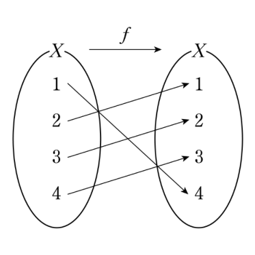
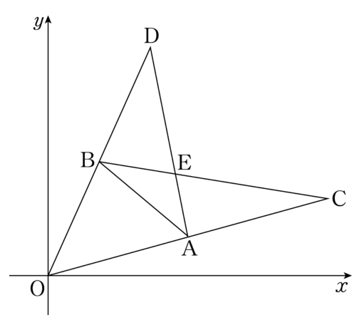
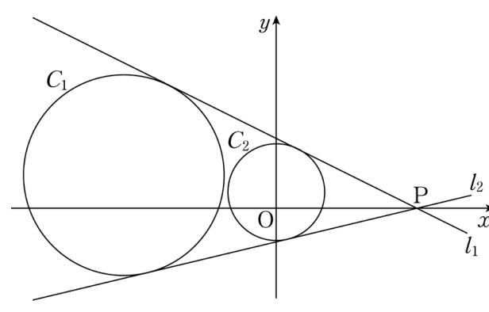

생성기 숫자판 2/6 · G2H-03#0두 집합 $A=\left\{6,\ 8,\ 9,\ 10,\ 14,\ 15\right\}$, $B=\left\{4,\ 5,\ 8,\ 10,\ 16\right\}$에 대하여 집합 $A\cap B$의 모든 원소의 합으로 옳은 것을 고르세요.
① $15$② $16$③ $17$④ $18$⑤ $19$
정답④ $18$ $A\cap B=\left\{8,\ 10\right\}$이므로 모든 원소의 합은 $8+10=18$
숫자: 원본 1 2 2 3 → 쌍둥이 6 8 9 10 14 15 4 5 8 10 16
생성기 숫자판 3/6 · G2H-03#0두 집합 $A=\left\{6,\ 8,\ 10,\ 13\right\}$, $B=\left\{1,\ 10,\ 14\right\}$에 대하여 집합 $A\cup B$의 모든 원소의 합으로 옳은 것을 고르세요.
① $52$② $53$③ $54$④ $55$⑤ $56$
정답① $52$ $A\cup B=\left\{1,\ 6,\ 8,\ 10,\ 13,\ 14\right\}$이므로 모든 원소의 합은 $1+6+8+10+13+14=52$
숫자: 원본 1 2 2 3 → 쌍둥이 6 8 10 13 1 10 14 · 같은 수: 1
생성기 숫자판 4/6 · G2H-03#0두 집합 $A=\left\{3,\ 8,\ 9,\ 13,\ 15,\ 16\right\}$, $B=\left\{9,\ 14\right\}$에 대하여 집합 $A\cup B$의 모든 원소의 합으로 옳은 것을 고르세요.
① $74$② $75$③ $76$④ $77$⑤ $78$
정답⑤ $78$ $A\cup B=\left\{3,\ 8,\ 9,\ 13,\ 14,\ 15,\ 16\right\}$이므로 모든 원소의 합은 $3+8+9+13+14+15+16=78$
숫자: 원본 1 2 2 3 → 쌍둥이 3 8 9 13 15 16 9 14 · 같은 수: 3
생성기 숫자판 5/6 · G2H-03#0두 집합 $A=\left\{2,\ 4,\ 5,\ 7,\ 11,\ 15\right\}$, $B=\left\{4,\ 5\right\}$에 대하여 집합 $A\cap B$의 모든 원소의 합으로 옳은 것을 고르세요.
① $8$② $9$③ $10$④ $11$⑤ $12$
정답② $9$ $A\cap B=\left\{4,\ 5\right\}$이므로 모든 원소의 합은 $4+5=9$
숫자: 원본 1 2 2 3 → 쌍둥이 2 4 5 7 11 15 4 5 · 같은 수: 2
생성기 숫자판 6/6 · G2H-03#0두 집합 $A=\left\{2,\ 4,\ 5,\ 6,\ 13\right\}$, $B=\left\{6,\ 7,\ 8,\ 16\right\}$에 대하여 집합 $A\cup B$의 모든 원소의 합으로 옳은 것을 고르세요.
① $57$② $58$③ $59$④ $60$⑤ $61$
정답⑤ $61$ $A\cup B=\left\{2,\ 4,\ 5,\ 6,\ 7,\ 8,\ 13,\ 16\right\}$이므로 모든 원소의 합은 $2+4+5+6+7+8+13+16=61$
5. 2019년 3월 나형 5번 · 3점 · 고1 범위 · 항등식과 나머지정리·인수분해 · G2M8-06#2
원본 (내부용)모든 실수 $x$에 대하여 등식 $x^{3} -1= ( x-1 ) ( x^{2} +ax+b )$ 가 성립할 때, $a+b$의 값은? (단, $a$, $b$는 상수이다.) [3점]
① $-2$② $-1$③ $0$④ $1$⑤ $2$
원본 정답 ⑤
원본 풀이 (내부용)[출제의도] 항등식의 성질을 이해한다.
다항식 \(x^3-1\)을 인수분해하면
\(
x^3-1=(x-1)(x^2+x+1)
\)
이므로 \(a=1,\ b=1\)이다. 따라서
\(
a+b=2
\)
**[다른 풀이 1]**
\(
x^3-1=(x-1)(x^2+ax+b)
\)
\(
=x^3+(a-1)x^2+(b-a)x-b
\)
이므로 양변의 계수를 비교하면
\(
a-1=0,\quad b-a=0,\quad -b=-1
\)
\(
a=1,\quad b=1
\)
따라서 \(a+b=2\).
**[다른 풀이 2]**
모든 실수 \(x\)에 대하여 등식
\(
x^3-1=(x-1)(x^2+ax+b)\quad\cdots\text{㉠}
\)
이 성립하므로 ㉠의 양변에 적당한 실수 \(x\)의 값을 대입하여도 등식이 성립한다.
등식 ㉠에 \(x=0\)을 대입하면
\(
-1=-b\text{에서 }b=1
\)
등식 ㉠에 \(x=-1\)을 대입하면
\(
-2=-2(2-a)\text{에서 }a=1
\)
따라서 \(a+b=2\).
생성기 숫자판 1/6 · G2M8-06#2모든 실수 $x$에 대하여 등식 $x^{3}-64=\left(x-4\right)\left(x^{2}+ax+b\right)$가 성립할 때, $a+b$의 값으로 옳은 것을 고르세요. (단, $a$, $b$는 상수입니다.)
① $19$② $20$③ $21$④ $22$⑤ $23$
정답② $20$ $x^{3}-64=x^{3}-4^{3}=\left(x-4\right)\left(x^{2}+4x+16\right)$ 모든 실수 $x$에 대하여 성립하므로 $a=4$, $b=16$ 따라서 $a+b=20$
숫자: 원본 1 1 → 쌍둥이 64 4
생성기 숫자판 2/6 · G2M8-06#2모든 실수 $x$에 대하여 등식 $x^{3}-512=\left(x-8\right)\left(x^{2}+ax+b\right)$가 성립할 때, $a+b$의 값으로 옳은 것을 고르세요. (단, $a$, $b$는 상수입니다.)
① $71$② $72$③ $73$④ $74$⑤ $75$
정답② $72$ $x^{3}-512=x^{3}-8^{3}=\left(x-8\right)\left(x^{2}+8x+64\right)$ 모든 실수 $x$에 대하여 성립하므로 $a=8$, $b=64$ 따라서 $a+b=72$
숫자: 원본 1 1 → 쌍둥이 512 8
생성기 숫자판 3/6 · G2M8-06#2모든 실수 $x$에 대하여 등식 $x^{3}-216=\left(x-6\right)\left(x^{2}+ax+b\right)$가 성립할 때, $a+b$의 값으로 옳은 것을 고르세요. (단, $a$, $b$는 상수입니다.)
① $40$② $41$③ $42$④ $43$⑤ $44$
정답③ $42$ $x^{3}-216=x^{3}-6^{3}=\left(x-6\right)\left(x^{2}+6x+36\right)$ 모든 실수 $x$에 대하여 성립하므로 $a=6$, $b=36$ 따라서 $a+b=42$
숫자: 원본 1 1 → 쌍둥이 216 6
생성기 숫자판 4/6 · G2M8-06#2모든 실수 $x$에 대하여 등식 $x^{3}+343=\left(x+7\right)\left(x^{2}+ax+b\right)$가 성립할 때, $a+b$의 값으로 옳은 것을 고르세요. (단, $a$, $b$는 상수입니다.)
① $41$② $42$③ $43$④ $44$⑤ $45$
정답② $42$ $x^{3}+343=x^{3}+7^{3}=\left(x+7\right)\left(x^{2}-7x+49\right)$ 모든 실수 $x$에 대하여 성립하므로 $a=-7$, $b=49$ 따라서 $a+b=42$
숫자: 원본 1 1 → 쌍둥이 343 7
생성기 숫자판 5/6 · G2M8-06#2모든 실수 $x$에 대하여 등식 $x^{3}+125=\left(x+5\right)\left(x^{2}+ax+b\right)$가 성립할 때, $a+b$의 값으로 옳은 것을 고르세요. (단, $a$, $b$는 상수입니다.)
① $17$② $18$③ $19$④ $20$⑤ $21$
정답④ $20$ $x^{3}+125=x^{3}+5^{3}=\left(x+5\right)\left(x^{2}-5x+25\right)$ 모든 실수 $x$에 대하여 성립하므로 $a=-5$, $b=25$ 따라서 $a+b=20$
숫자: 원본 1 1 → 쌍둥이 125 5
생성기 숫자판 6/6 · G2M8-06#2모든 실수 $x$에 대하여 등식 $x^{3}-343=\left(x-7\right)\left(x^{2}+ax+b\right)$가 성립할 때, $a+b$의 값으로 옳은 것을 고르세요. (단, $a$, $b$는 상수입니다.)
① $54$② $55$③ $56$④ $57$⑤ $58$
정답③ $56$ $x^{3}-343=x^{3}-7^{3}=\left(x-7\right)\left(x^{2}+7x+49\right)$ 모든 실수 $x$에 대하여 성립하므로 $a=7$, $b=49$ 따라서 $a+b=56$
숫자: 원본 1 1 → 쌍둥이 343 7
6. 2019년 3월 나형 6번 · 3점 · 고1 범위 · 순열과 조합 · G2H-05#8
원본 (내부용)서로 다른 $6$개의 과목 중에서 서로 다른 $3$개를 선택하는 경우의 수는? [3점]
① $12$② $14$③ $16$④ $18$⑤ $20$
원본 정답 ⑤
원본 풀이 (내부용)[출제의도] 조합의 뜻을 이해한다.
서로 다른 6개의 과목 중에서 서로 다른 3개를 선택하는 경우의 수는 서로 다른 6개 중에서 3개를 선택하는 조합의 수 \({}_6C_3\)과 같으므로
\(
{}_6C_3=\frac{{}_6P_3}{3!}
=\frac{6\times5\times4}{3\times2\times1}=20
\)
생성기 숫자판 1/6 · G2H-05#8서로 다른 $4$개의 과목 중에서 서로 다른 $2$개를 선택하는 경우의 수로 옳은 것을 고르세요.
① $2$② $3$③ $4$④ $6$⑤ $8$
정답④ $6$ 서로 다른 $4$개에서 $2$개를 택하는 경우의 수는 ${}_{4}\mathrm{C}_{2}=6$
숫자: 원본 6 3 → 쌍둥이 4 2
생성기 숫자판 2/6 · G2H-05#8서로 다른 $5$개의 과목 중에서 서로 다른 $3$개를 선택하는 경우의 수로 옳은 것을 고르세요.
① $10$② $12$③ $14$④ $15$⑤ $20$
정답① $10$ 서로 다른 $5$개에서 $3$개를 택하는 경우의 수는 ${}_{5}\mathrm{C}_{3}=10$
숫자: 원본 6 3 → 쌍둥이 5 3 · 같은 수: 3
생성기 숫자판 3/6 · G2H-05#8서로 다른 $7$개의 과목 중에서 서로 다른 $2$개를 선택하는 경우의 수로 옳은 것을 고르세요.
① $10$② $19$③ $21$④ $23$⑤ $42$
정답③ $21$ 서로 다른 $7$개에서 $2$개를 택하는 경우의 수는 ${}_{7}\mathrm{C}_{2}=21$
숫자: 원본 6 3 → 쌍둥이 7 2
생성기 숫자판 4/6 · G2H-05#8서로 다른 $5$개의 과목 중에서 서로 다른 $2$개를 선택하는 경우의 수로 옳은 것을 고르세요.
① $5$② $8$③ $10$④ $12$⑤ $20$
정답③ $10$ 서로 다른 $5$개에서 $2$개를 택하는 경우의 수는 ${}_{5}\mathrm{C}_{2}=10$
숫자: 원본 6 3 → 쌍둥이 5 2
생성기 숫자판 5/6 · G2H-05#8서로 다른 $7$개의 과목 중에서 서로 다른 $3$개를 선택하는 경우의 수로 옳은 것을 고르세요.
① $17$② $33$③ $35$④ $37$⑤ $70$
정답③ $35$ 서로 다른 $7$개에서 $3$개를 택하는 경우의 수는 ${}_{7}\mathrm{C}_{3}=35$
숫자: 원본 6 3 → 쌍둥이 7 3 · 같은 수: 3
생성기 숫자판 6/6 · G2H-05#8서로 다른 $4$개의 과목 중에서 서로 다른 $3$개를 선택하는 경우의 수로 옳은 것을 고르세요.
① $4$② $6$③ $8$④ $9$⑤ $14$
정답① $4$ 서로 다른 $4$개에서 $3$개를 택하는 경우의 수는 ${}_{4}\mathrm{C}_{3}=4$
숫자: 원본 6 3 → 쌍둥이 4 3 · 같은 수: 3
7. 2019년 3월 나형 7번 · 3점 · 고1 범위 · 함수 · G2f-16#2
원본 (내부용)그림은 함수 $f:X \to X$를 나타낸 것이다. $f(2)+f^{-1} (3)$의 값은? [3점]

① $3$② $4$③ $5$④ $6$⑤ $7$
원본 정답 ③
원본 풀이 (내부용)[출제의도] 역함수의 성질을 이해한다.
주어진 그래프에서
\(
f(2)=1,\quad f(4)=3
\)
함수 \(f\)는 일대일대응이므로 역함수의 성질에 의하여
\(
f^{-1}(3)=4
\)
따라서
\(
f(2)+f^{-1}(3)=1+4=5
\)
생성기 숫자판 1/6 · G2f-16#2그림은 함수 $f:X\to X$를 나타낸 것입니다. $f\left(3\right)+f^{-1}\left(7\right)$의 값으로 옳은 것을 고르세요.
① $18$② $19$③ $20$④ $21$⑤ $22$
정답③ $20$ 그림에서 $f\left(3\right)=10$ $f\left(10\right)=7$이므로 $f^{-1}\left(7\right)=10$ 따라서 $f\left(3\right)+f^{-1}\left(7\right)=10+10=20$
숫자: 원본 2 1 3 → 쌍둥이 3 1 7 · 같은 수: 1 3
생성기 숫자판 2/6 · G2f-16#2그림은 함수 $f:X\to X$를 나타낸 것입니다. $f\left(10\right)+f^{-1}\left(9\right)$의 값으로 옳은 것을 고르세요.
① $17$② $18$③ $19$④ $20$⑤ $21$
정답③ $19$ 그림에서 $f\left(10\right)=9$ $f\left(10\right)=9$이므로 $f^{-1}\left(9\right)=10$ 따라서 $f\left(10\right)+f^{-1}\left(9\right)=9+10=19$
숫자: 원본 2 1 3 → 쌍둥이 10 1 9 · 같은 수: 1
생성기 숫자판 3/6 · G2f-16#2그림은 함수 $f:X\to X$를 나타낸 것입니다. $f\left(8\right)+f^{-1}\left(12\right)$의 값으로 옳은 것을 고르세요.
① $18$② $20$③ $22$④ $24$⑤ $26$
정답② $20$ 그림에서 $f\left(8\right)=12$ $f\left(8\right)=12$이므로 $f^{-1}\left(12\right)=8$ 따라서 $f\left(8\right)+f^{-1}\left(12\right)=12+8=20$
숫자: 원본 2 1 3 → 쌍둥이 8 1 12 · 같은 수: 1
생성기 숫자판 4/6 · G2f-16#2그림은 함수 $f:X\to X$를 나타낸 것입니다. $f\left(12\right)+f^{-1}\left(9\right)$의 값으로 옳은 것을 고르세요.
① $9$② $10$③ $11$④ $12$⑤ $13$
정답⑤ $13$ 그림에서 $f\left(12\right)=4$ $f\left(9\right)=9$이므로 $f^{-1}\left(9\right)=9$ 따라서 $f\left(12\right)+f^{-1}\left(9\right)=4+9=13$
숫자: 원본 2 1 3 → 쌍둥이 12 1 9 · 같은 수: 1
생성기 숫자판 5/6 · G2f-16#2그림은 함수 $f:X\to X$를 나타낸 것입니다. $f\left(5\right)+f^{-1}\left(11\right)$의 값으로 옳은 것을 고르세요.
① $18$② $19$③ $20$④ $21$⑤ $22$
정답③ $20$ 그림에서 $f\left(5\right)=10$ $f\left(10\right)=11$이므로 $f^{-1}\left(11\right)=10$ 따라서 $f\left(5\right)+f^{-1}\left(11\right)=10+10=20$
숫자: 원본 2 1 3 → 쌍둥이 5 1 11 · 같은 수: 1
생성기 숫자판 6/6 · G2f-16#2그림은 함수 $f:X\to X$를 나타낸 것입니다. $f\left(10\right)+f^{-1}\left(7\right)$의 값으로 옳은 것을 고르세요.
① $3$② $4$③ $5$④ $6$⑤ $7$
정답④ $6$ 그림에서 $f\left(10\right)=3$ $f\left(3\right)=7$이므로 $f^{-1}\left(7\right)=3$ 따라서 $f\left(10\right)+f^{-1}\left(7\right)=3+3=6$
숫자: 원본 2 1 3 → 쌍둥이 10 1 7 · 같은 수: 1
8. 2019년 3월 나형 8번 · 3점 · 고1 범위 · 함수 · G2H-04#2
원본 (내부용)함수 $f(x)=2x-1$에 대하여 $( f \circ f ) ( 5 )$의 값은? [3점]
9. 2019년 3월 나형 9번 · 3점 · 고1 범위 · 이차방정식과 이차함수 · G2H-02#4
원본 (내부용)이차함수 $y=2x^{2} +ax-1$의 그래프가 $x$축과 만나는 두 점의 $x$좌표의 합이 $-1$일 때, 상수 $a$의 값은? [3점]
① $-2$② $-1$③ $0$④ $1$⑤ $2$
원본 정답 ⑤
원본 풀이 (내부용)[출제의도] 이차방정식과 이차함수의 관계를 이해한다.
이차함수 \(y=2x^2+ax-1\)의 그래프가 \(x\)축과 만나는 두 점의 \(x\)좌표는 이차방정식
\(
2x^2+ax-1=0
\)
의 두 실근과 같다. 이 이차방정식의 두 근의 합은 근과 계수의 관계에 의하여 \(-\frac a2\)이다.
따라서
\(
-\frac a2=-1
\)
에서
\(
a=2
\)
생성기 숫자판 1/6 · G2H-02#4이차함수 $y=13x^{2}+ax-37$의 그래프가 $x$축과 만나는 두 점의 $x$좌표의 합이 $11$일 때, 상수 $a$의 값으로 옳은 것을 고르세요.
① $-144$② $-143$③ $-142$④ $-141$⑤ $143$
정답② $-143$ 한 점의 $x$좌표는 방정식 $13x^2+ax-37=0$의 한 근입니다. 근과 계수의 관계에 의해 두 근의 합은 $-\frac{a}{13}=11$입니다. 따라서 $a=-13\times 11=-143$입니다.
숫자: 원본 2 1 1 → 쌍둥이 13 37 11
생성기 숫자판 2/6 · G2H-02#4이차함수 $y=3x^{2}+ax-3$의 그래프가 $x$축과 만나는 두 점의 $x$좌표의 합이 $1$일 때, 상수 $a$의 값으로 옳은 것을 고르세요.
① $-7$② $-6$③ $-5$④ $-4$⑤ $-3$
정답⑤ $-3$ 두 점의 $x$좌표는 이차방정식 $3x^{2}+ax-3=0$의 두 근이므로 근과 계수의 관계에 의하여 두 근의 합은 $-\frac{a}{3}=1$ 따라서 $a=-3$
숫자: 원본 2 1 1 → 쌍둥이 3 3 1 · 같은 수: 1
생성기 숫자판 3/6 · G2H-02#4이차함수 $y=6x^{2}+ax-23$의 그래프가 $x$축과 만나는 두 점의 $x$좌표의 합이 $4$일 때, 상수 $a$의 값으로 옳은 것을 고르세요.
① $-25$② $-24$③ $-23$④ $-22$⑤ $24$
정답② $-24$ 한 점의 $x$좌표는 방정식 $6x^2+ax-23=0$의 한 근입니다. 근과 계수의 관계에 의해 두 근의 합은 $-\frac{a}{6}=4$입니다. 따라서 $a=-6\times 4=-24$입니다.
숫자: 원본 2 1 1 → 쌍둥이 6 23 4
생성기 숫자판 4/6 · G2H-02#4이차함수 $y=3x^{2}+ax-5$의 그래프가 $x$축과 만나는 두 점의 $x$좌표의 합이 $-2$일 때, 상수 $a$의 값으로 옳은 것을 고르세요.
① $-6$② $3$③ $4$④ $5$⑤ $6$
정답⑤ $6$ 두 점의 $x$좌표는 이차방정식 $3x^{2}+ax-5=0$의 두 근이므로 근과 계수의 관계에 의하여 두 근의 합은 $-\frac{a}{3}=-2$ 따라서 $a=6$
숫자: 원본 2 1 1 → 쌍둥이 3 5 2 · 같은 수: 2
생성기 숫자판 5/6 · G2H-02#4이차함수 $y=2x^{2}+ax-1$의 그래프가 $x$축과 만나는 두 점의 $x$좌표의 합이 $-2$일 때, 상수 $a$의 값으로 옳은 것을 고르세요.
① $-4$② $1$③ $2$④ $3$⑤ $4$
정답⑤ $4$ 두 점의 $x$좌표는 이차방정식 $2x^{2}+ax-1=0$의 두 근이므로 근과 계수의 관계에 의하여 두 근의 합은 $-\frac{a}{2}=-2$ 따라서 $a=4$
숫자: 원본 2 1 1 → 쌍둥이 2 1 2 · 같은 수: 1 2
생성기 숫자판 6/6 · G2H-02#4이차함수 $y=3x^{2}+ax+5$의 그래프가 $x$축과 만나는 두 점의 $x$좌표의 합이 $-3$일 때, 상수 $a$의 값으로 옳은 것을 고르세요.
① $-9$② $6$③ $7$④ $8$⑤ $9$
정답⑤ $9$ 두 점의 $x$좌표는 이차방정식 $3x^{2}+ax+5=0$의 두 근이므로 근과 계수의 관계에 의하여 두 근의 합은 $-\frac{a}{3}=-3$ 따라서 $a=9$
숫자: 원본 2 1 1 → 쌍둥이 3 5 3
10. 2019년 3월 나형 10번 · 3점 · 고1 범위 · 원의 방정식 · G2M8-06#8
원본 (내부용)좌표평면에서 점 $\mathrm{A}$$( 4,3 )$과 원 $x^{2} +y^{2} =16$ 위의 점 $\mathrm{P}$에 대하여 선분 $\mathrm{AP}$의 길이의 최솟값은? [3점]
① $1$② $2$③ $3$④ $4$⑤ $5$
원본 정답 ①
원본 풀이 (내부용)[출제의도] 원의 성질을 이용하여 선분의 길이의 최솟값을 추론한다.
점 \(A\)의 좌표가 \((4,3)\)이므로
\(
\overline{OA}=\sqrt{4^2+3^2}=5
\)
점 \(P\)는 원 \(x^2+y^2=16\) 위의 점이므로
\(
\overline{OP}=4
\)
이때 그림과 같이 임의의 점 \(P\)에 대하여
\(
\overline{OA}\leq \overline{OP}+\overline{PA}
\)
가 성립하므로
\(
\overline{AP}\geq \overline{OA}-\overline{OP}=5-4=1
\)
따라서 선분 \(AP\)의 길이의 최솟값은 \(1\)이다.
생성기 숫자판 1/6 · G2M8-06#8좌표평면에서 점 $\mathrm{A}\left(0,\ 5\right)$와 원 $x^{2}+y^{2}=9$ 위의 점 $\mathrm{P}$에 대하여 선분 $\mathrm{AP}$의 길이의 최솟값으로 옳은 것을 고르세요.
① $2$② $3$③ $4$④ $5$⑤ $6$
정답① $2$ $\overline{\mathrm{OA}}=\sqrt{0^{2}+5^{2}}=5$이고 원의 반지름의 길이는 $3$이므로 점 $\mathrm{A}$는 원의 외부에 있습니다. 선분 $\mathrm{AP}$의 길이의 최솟값은 $\overline{\mathrm{OA}}-3=5-3=2$
숫자: 원본 4 3 16 → 쌍둥이 0 5 9
생성기 숫자판 2/6 · G2M8-06#8좌표평면에서 점 $\mathrm{A}\left(5,\ 0\right)$과 원 $x^{2}+y^{2}=9$ 위의 점 $\mathrm{P}$에 대하여 선분 $\mathrm{AP}$의 길이의 최솟값으로 옳은 것을 고르세요.
① $1$② $2$③ $3$④ $4$⑤ $5$
정답② $2$ $\overline{\mathrm{OA}}=\sqrt{5^{2}+0^{2}}=5$이고 원의 반지름의 길이는 $3$이므로 점 $\mathrm{A}$는 원의 외부에 있습니다. 선분 $\mathrm{AP}$의 길이의 최솟값은 $\overline{\mathrm{OA}}-3=5-3=2$
숫자: 원본 4 3 16 → 쌍둥이 5 0 9
생성기 숫자판 3/6 · G2M8-06#8좌표평면에서 점 $\mathrm{A}\left(-6,\ 8\right)$과 원 $x^{2}+y^{2}=25$ 위의 점 $\mathrm{P}$에 대하여 선분 $\mathrm{AP}$의 길이의 최솟값으로 옳은 것을 고르세요.
① $1$② $2$③ $3$④ $4$⑤ $5$
정답⑤ $5$ $\overline{\mathrm{OA}}=\sqrt{-6^{2}+8^{2}}=10$이고 원의 반지름의 길이는 $5$이므로 점 $\mathrm{A}$는 원의 외부에 있습니다. 선분 $\mathrm{AP}$의 길이의 최솟값은 $\overline{\mathrm{OA}}-5=10-5=5$
숫자: 원본 4 3 16 → 쌍둥이 6 8 25
생성기 숫자판 4/6 · G2M8-06#8좌표평면에서 점 $\mathrm{A}\left(5,\ 12\right)$와 원 $x^{2}+y^{2}=64$ 위의 점 $\mathrm{P}$에 대하여 선분 $\mathrm{AP}$의 길이의 최솟값으로 옳은 것을 고르세요.
① $1$② $2$③ $3$④ $4$⑤ $5$
정답⑤ $5$ $\overline{\mathrm{OA}}=\sqrt{5^{2}+12^{2}}=13$이고 원의 반지름의 길이는 $8$이므로 점 $\mathrm{A}$는 원의 외부에 있습니다. 선분 $\mathrm{AP}$의 길이의 최솟값은 $\overline{\mathrm{OA}}-8=13-8=5$
숫자: 원본 4 3 16 → 쌍둥이 5 12 64
생성기 숫자판 5/6 · G2M8-06#8좌표평면에서 점 $\mathrm{A}\left(8,\ 6\right)$과 원 $x^{2}+y^{2}=25$ 위의 점 $\mathrm{P}$에 대하여 선분 $\mathrm{AP}$의 길이의 최솟값으로 옳은 것을 고르세요.
① $3$② $4$③ $5$④ $6$⑤ $7$
정답③ $5$ $\overline{\mathrm{OA}}=\sqrt{8^{2}+6^{2}}=10$이고 원의 반지름의 길이는 $5$이므로 점 $\mathrm{A}$는 원의 외부에 있습니다. 선분 $\mathrm{AP}$의 길이의 최솟값은 $\overline{\mathrm{OA}}-5=10-5=5$
숫자: 원본 4 3 16 → 쌍둥이 8 6 25
생성기 숫자판 6/6 · G2M8-06#8좌표평면에서 점 $\mathrm{A}\left(8,\ 6\right)$과 원 $x^{2}+y^{2}=81$ 위의 점 $\mathrm{P}$에 대하여 선분 $\mathrm{AP}$의 길이의 최솟값으로 옳은 것을 고르세요.
① $1$② $2$③ $3$④ $4$⑤ $5$
정답① $1$ $\overline{\mathrm{OA}}=\sqrt{8^{2}+6^{2}}=10$이고 원의 반지름의 길이는 $9$이므로 점 $\mathrm{A}$는 원의 외부에 있습니다. 선분 $\mathrm{AP}$의 길이의 최솟값은 $\overline{\mathrm{OA}}-9=10-9=1$
숫자: 원본 4 3 16 → 쌍둥이 8 6 81
11. 2019년 3월 나형 11번 · 3점 · 고1 범위 · 여러 가지 방정식과 부등식 · G2H-02#11
원본 (내부용)연립방정식 $\begin{cases}x-2y=1 \\ x^{2} -4y^{2} =5 \end{cases}$ 의 해를 $x=a$, $y=b$라 할 때, $a+b$의 값은? [3점]
원본 (내부용)다항식 $f(x)$를 $(x-3)(2x-a)$로 나눈 몫은 $x+1$이고 나머지는 $6$이다. 다항식 $f(x)$를 $x-1$로 나눈 나머지가 $6$일 때, 상수 $a$의 값은? [3점]
① $2$② $4$③ $6$④ $8$⑤ $10$
원본 정답 ①
원본 풀이 (내부용)[출제의도] 나머지정리를 이해하여 미지수를 구한다.
다항식 \(f(x)\)를 \((x-3)(2x-a)\)로 나눈 몫이 \(x+1\)이고 나머지가 \(6\)이므로
\(
f(x)=(x-3)(2x-a)(x+1)+6\quad\cdots\text{㉠}
\)
다항식 \(f(x)\)를 \(x-1\)로 나눈 나머지가 \(6\)이므로 나머지정리에 의해 \(f(1)=6\)이다. ㉠에 \(x=1\)을 대입하면
\(
\begin{aligned}
f(1)&=(1-3)(2-a)\times2+6\\
&=-4(2-a)+6\\
&=-8+4a+6\\
&=4a-2
\end{aligned}
\)
따라서 \(4a-2=6,\ a=2\).
**[다른 풀이]**
다항식 \(f(x)\)를 \((x-3)(2x-a)\)로 나눈 몫이 \(x+1\)이고 나머지가 \(6\)이므로
\(
f(x)=(x-3)(2x-a)(x+1)+6\quad\cdots\text{㉠}
\)
한편, 다항식 \(f(x)\)를 \(x-1\)로 나눈 몫을 \(Q(x)\)라 하면
\(
f(x)=(x-1)Q(x)+6\quad\cdots\text{㉡}
\)
㉠, ㉡에서
\(
(x-3)(2x-a)(x+1)=(x-1)Q(x)
\)
이므로 \((x-3)(2x-a)(x+1)\)은 \(x-1\)을 인수로 가져야 한다.
따라서 \(2x-a\)는 \(x-1\)을 인수로 가져야 한다.
\(
2x-a=2(x-1)\text{에서 }a=2
\)
생성기 숫자판 1/6 · G2M10-01#0다항식 $f\left(x\right)$를 $\left(x-4\right)\left(2x-a\right)$로 나눈 몫은 $x-1$이고 나머지는 $5$입니다. 다항식 $f\left(x\right)$를 $x-3$으로 나눈 나머지가 $5$일 때, 상수 $a$의 값으로 옳은 것을 고르세요.
생성기 숫자판 2/6 · G2M10-01#0다항식 $f\left(x\right)$를 $\left(x-3\right)\left(2x-a\right)$로 나눈 몫은 $x+2$이고 나머지는 $2$입니다. 다항식 $f\left(x\right)$를 $x-2$로 나눈 나머지가 $2$일 때, 상수 $a$의 값으로 옳은 것을 고르세요.
생성기 숫자판 3/6 · G2M10-01#0다항식 $f\left(x\right)$를 $\left(x-3\right)\left(2x-a\right)$로 나눈 몫은 $x-1$이고 나머지는 $5$입니다. 다항식 $f\left(x\right)$를 $x-2$로 나눈 나머지가 $5$일 때, 상수 $a$의 값으로 옳은 것을 고르세요.
생성기 숫자판 4/6 · G2M10-01#0다항식 $f\left(x\right)$를 $\left(x-4\right)\left(2x-a\right)$로 나눈 몫은 $x-1$이고 나머지는 $4$입니다. 다항식 $f\left(x\right)$를 $x-2$로 나눈 나머지가 $4$일 때, 상수 $a$의 값으로 옳은 것을 고르세요.
생성기 숫자판 5/6 · G2M10-01#0다항식 $f\left(x\right)$를 $\left(x-5\right)\left(2x-a\right)$로 나눈 몫은 $x+3$이고 나머지는 $2$입니다. 다항식 $f\left(x\right)$를 $x-1$로 나눈 나머지가 $2$일 때, 상수 $a$의 값으로 옳은 것을 고르세요.
생성기 숫자판 6/6 · G2M10-01#0다항식 $f\left(x\right)$를 $\left(x-3\right)\left(2x-a\right)$로 나눈 몫은 $x+1$이고 나머지는 $9$입니다. 다항식 $f\left(x\right)$를 $x-2$로 나눈 나머지가 $9$일 때, 상수 $a$의 값으로 옳은 것을 고르세요.
14. 2019년 3월 나형 14번 · 4점 · 고1 범위 · 여러 가지 방정식과 부등식 · 4점 쌍둥이
원본 (내부용)복소수 $z=a+bi$($a$, $b$는 실수)가 다음 조건을 만족시킬 때, $a+b$의 값은? (단, $i= \sqrt{-1}$이고, $\overline{z}$는 $z$의 켤레복소수이다.) [4점] (가) $z$는 방정식 $x^{3} -3x^{2} +9x+13=0$의 근이다. (나) $\frac{z- {\overline{z}} }{i}$는 음의 실수이다.
① $-3$② $-1$③ $1$④ $3$⑤ $5$
원본 정답 ②
원본 풀이 (내부용)[출제의도] 삼차방정식의 허근과 관련된 문제를 해결한다.
조건 (가)에서 다항식 \(x^3-3x^2+9x+13\)을 조립제법을 이용하여 인수분해하면
\(
x^3-3x^2+9x+13=(x+1)(x^2-4x+13)
\)
이차방정식 \(x^2-4x+13=0\)에서
\(
x=2\pm3i
\)
또는 \(x=2+3i\) 또는 \(x=2-3i\)
따라서 방정식 \(x^3-3x^2+9x+13=0\)의 세 근은
\(
x=-1\text{ 또는 }x=2+3i\text{ 또는 }x=2-3i
\)
조건 (나)에서
\(
\frac{z-\bar z}{i}
=\frac{(a+bi)-(a-bi)}{i}
=\frac{2bi}{i}=2b
\)
\(\frac{z-\bar z}{i}\)가 음의 실수이므로 \(b\)는 음수이다.
원본 인쇄 쪽수: 2
따라서
\(
z=2-3i
\)
\(
a=2,\quad b=-3
\)
\(
a+b=-1
\)
## 해설
쌍둥이 1/5 · 4점 쌍둥이복소수 $z=a+bi$ ($a$, $b$는 실수)가 다음 조건을 만족시킬 때, $a+b$의 값으로 옳은 것을 고르세요. (단, $i=\sqrt{-1}$이고, $\overline{z}$는 $z$의 켤레복소수입니다.) (가) $z$는 방정식 $x^{3}-7x^{2}+41x-87=0$의 근입니다. (나) $\frac{z-\overline{z}}{i}$는 음의 실수입니다.
① $-7$② $-5$③ $-3$④ $-1$⑤ $1$
정답③ $-3$ $x^{3}-7x^{2}+41x-87=(x-3)\left(x^{2}-4x+29\right)$이므로 근은 $x=3$ 또는 $x=2\pm 5i$ $\frac{z-\overline{z}}{i}=\frac{2bi}{i}=2b$가 음의 실수이므로 $b<0$이고, $z$는 허수입니다 따라서 $z=2-5i$, $a=2$, $b=-5$ $a+b=-3$
숫자: 원본 3 9 13 0 → 쌍둥이 7 41 87 0 · 같은 수: 0
쌍둥이 2/5 · 4점 쌍둥이복소수 $z=a+bi$ ($a$, $b$는 실수)가 다음 조건을 만족시킬 때, $a+b$의 값으로 옳은 것을 고르세요. (단, $i=\sqrt{-1}$이고, $\overline{z}$는 $z$의 켤레복소수입니다.) (가) $z$는 방정식 $x^{3}-4x^{2}-2x+20=0$의 근입니다. (나) $\frac{z-\overline{z}}{i}$는 음의 실수입니다.
① $2$② $4$③ $6$④ $8$⑤ $10$
정답① $2$ $x^{3}-4x^{2}-2x+20=(x+2)\left(x^{2}-6x+10\right)$이므로 근은 $x=-2$ 또는 $x=3\pm i$ $\frac{z-\overline{z}}{i}=\frac{2bi}{i}=2b$가 음의 실수이므로 $b<0$이고, $z$는 허수입니다 따라서 $z=3-i$, $a=3$, $b=-1$ $a+b=2$
숫자: 원본 3 9 13 0 → 쌍둥이 4 2 20 0 · 같은 수: 0
쌍둥이 3/5 · 4점 쌍둥이복소수 $z=a+bi$ ($a$, $b$는 실수)가 다음 조건을 만족시킬 때, $a+b$의 값으로 옳은 것을 고르세요. (단, $i=\sqrt{-1}$이고, $\overline{z}$는 $z$의 켤레복소수입니다.) (가) $z$는 방정식 $x^{3}+x^{2}+15x-17=0$의 근입니다. (나) $\frac{z-\overline{z}}{i}$는 음의 실수입니다.
① $-7$② $-5$③ $-3$④ $-1$⑤ $1$
정답② $-5$ $x^{3}+x^{2}+15x-17=(x-1)\left(x^{2}+2x+17\right)$이므로 근은 $x=1$ 또는 $x=-1\pm 4i$ $\frac{z-\overline{z}}{i}=\frac{2bi}{i}=2b$가 음의 실수이므로 $b<0$이고, $z$는 허수입니다 따라서 $z=-1-4i$, $a=-1$, $b=-4$ $a+b=-5$
숫자: 원본 3 9 13 0 → 쌍둥이 15 17 0 · 같은 수: 0
쌍둥이 4/5 · 4점 쌍둥이복소수 $z=a+bi$ ($a,b$는 실수)가 다음 조건을 만족합니다. (가) $z$는 $x^{3}-4x^{2}+14x-20=0$의 근입니다. (나) $(z-\overline z)/i$는 음의 실수입니다. $a+b$의 값을 구하세요.
① $-4$② $-3$③ $-2$④ $-1$⑤ $0$
정답③ $-2$ 다항식은 $(x-2)((x-1)^2+9)$로 인수분해됩니다. 따라서 근은 $2$, $1+3i$, $1-3i$입니다. 조건 (나)는 $2b<0$이므로 $z=1-3i$입니다. 따라서 $a+b=1-3=-2$입니다.
숫자: 원본 3 9 13 0 → 쌍둥이 4 14 20 0 · 같은 수: 0
쌍둥이 5/5 · 4점 쌍둥이복소수 $z=a+bi$ ($a,b$는 실수)가 다음 조건을 만족합니다. (가) $z$는 $x^{3}-8x^{2}+17x=0$의 근입니다. (나) $(z-\overline z)/i$는 음의 실수입니다. $a+b$의 값을 구하세요.
① $1$② $2$③ $3$④ $4$⑤ $5$
정답③ $3$ 다항식은 $x((x-4)^2+1)$로 인수분해됩니다. 근은 $0$, $4+i$, $4-i$입니다. 조건 (나)는 허수부가 음수인 근을 고르게 하므로 $z=4-i$입니다. 따라서 $a+b=4-1=3$입니다.
숫자: 원본 3 9 13 0 → 쌍둥이 8 17 0 · 같은 수: 0
15. 2019년 3월 나형 15번 · 4점 · 고1 범위 · 명제 · 4점 쌍둥이
원본 (내부용)명제 ‘모든 실수 $x$에 대하여 $2x^{2} +6x+a{\ge }0$이다.’ 가 거짓이 되도록 하는 정수 $a$의 최댓값은? [4점]
① $0$② $2$③ $4$④ $6$⑤ $8$
원본 정답 ③
원본 풀이 (내부용)[출제의도] ‘모든’이 포함된 명제와 관련된 문제를 해결한다.
명제
> ‘모든 실수 \(x\)에 대하여 \(2x^2+6x+a\geq0\)이다.’
가 거짓이면 그 명제의 부정인
> ‘어떤 실수 \(x\)에 대하여 \(2x^2+6x+a<0\)이다.’
는 참이다.
따라서 이차함수 \(y=2x^2+6x+a\)의 그래프와 \(x\)축이 서로 다른 두 점에서 만나야 한다.
이차방정식
\(
2x^2+6x+a=0
\)
의 판별식을 \(D\)라 하면
\(
\frac D4=3^2-2a>0
\)
에서
\(
a<\frac92
\)
따라서 정수 \(a\)의 최댓값은 \(4\)이다.
쌍둥이 1/5 · 4점 쌍둥이명제 「모든 실수 $x$에 대하여 $5x^2+14x+a\ge0$이다.」가 거짓이 되도록 하는 정수 $a$의 최댓값으로 옳은 것을 고르세요.
① $7$② $8$③ $9$④ $10$⑤ $11$
정답③ $9$ 명제가 거짓이려면 $5x^2+14x+a<0$인 실수 $x$가 있어야 한다. 이차식이 음수가 되는 실수가 존재할 조건은 판별식 $D=14^2-4\cdot5\cdot a=196-20a$가 양수인 것이다. $a<49/5=9.8$이므로 정수 $a$의 최댓값은 $9$이다.
숫자: 원본 2 6 0 → 쌍둥이 5 14 0 · 같은 수: 0
쌍둥이 2/5 · 4점 쌍둥이명제 「모든 실수 $x$에 대하여 $7x^2+18x+a\ge0$이다.」가 거짓이 되도록 하는 정수 $a$의 최댓값으로 옳은 것을 고르세요.
① $9$② $10$③ $11$④ $12$⑤ $13$
정답③ $11$ 명제가 거짓이려면 $7x^2+18x+a<0$인 실수 $x$가 있어야 한다. 판별식은 $D=18^2-4\cdot7\cdot a=324-28a$이므로 $D>0$이어야 한다. $a<81/7$이고 $11<81/7<12$이므로 정수 $a$의 최댓값은 $11$이다.
숫자: 원본 2 6 0 → 쌍둥이 7 18 0 · 같은 수: 0
쌍둥이 3/5 · 4점 쌍둥이명제 「모든 실수 $x$에 대하여 $x^{2}+5x+a\ge 0$이다.」가 거짓이 되도록 하는 정수 $a$의 최댓값으로 옳은 것을 고르세요.
① $4$② $5$③ $6$④ $7$⑤ $8$
정답③ $6$ 명제가 거짓이려면 $x^{2}+5x+a<0$인 실수 $x$가 존재해야 합니다. 판별식을 $D$라 하면 $D=25-4a>0$ $a<\frac{25}{4}$이므로 정수 $a$의 최댓값은 $6$
숫자: 원본 2 6 0 → 쌍둥이 5 0 · 같은 수: 0
쌍둥이 4/5 · 4점 쌍둥이명제 「모든 실수 $x$에 대하여 $3x^2+8x+a\ge0$이다.」가 거짓이 되도록 하는 정수 $a$의 최댓값을 $A$라 할 때, 이 이차식의 그래프의 꼭짓점의 $x$좌표를 구하세요.
쌍둥이 5/5 · 4점 쌍둥이명제 「모든 실수 $x$에 대하여 $5x^2+14x+a\ge0$이다.」가 거짓이 되도록 하는 정수 $a$의 최댓값을 $A$라 하자. 이 이차함수 그래프의 꼭짓점의 $x$좌표를 구하세요.
① $-2$② $-\frac95$③ $-\frac75$④ $-\frac65$⑤ $-1$
정답③ $-\frac75$ 꼭짓점의 $x$좌표는 $-14/(2\cdot5)=-7/5$이다. 최솟값은 $a-14^2/(4\cdot5)=a-49/5$이므로 명제가 거짓일 조건은 $a<49/5$이다. 따라서 $A=9$이며 구하는 좌표는 $-7/5$이다.
숫자: 원본 2 6 0 → 쌍둥이 5 14 0 · 같은 수: 0
16. 2019년 3월 나형 16번 · 4점 · 고1 범위 · 직선의 방정식 · 4점 쌍둥이
원본 (내부용)좌표평면에 두 점 $\mathrm{A}$$( -3,1 )$, $\mathrm{B}$$( 1,k )$가 있다. 점 $\mathrm{A}$를 $y$축에 대하여 대칭이동한 점을 $\mathrm{P}$라 하고, 점 $\mathrm{B}$를 $y$축의 방향으로 $-5$만큼 평행이동한 점을 $\mathrm{Q}$라 하자. 직선 $\mathrm{BP}$와 직선 $\mathrm{PQ}$가 서로 수직이 되도록 하는 모든 실수 $k$의 값의 곱은? [4점]
① $8$② $10$③ $12$④ $14$⑤ $16$
원본 정답 ②
원본 풀이 (내부용)[출제의도] 점의 이동 및 두 직선의 위치 관계와 관련된 문제를 해결한다.
점 \(P\)는 점 \(A(-3,1)\)을 \(y\)축에 대하여 대칭이동한 점이므로 그 좌표는 \((3,1)\)이다.
또, 점 \(Q\)는 점 \(B(1,k)\)를 \(y\)축의 방향으로 \(-5\)만큼 평행이동한 점이므로 그 좌표는 \((1,k-5)\)이다.
두 점 \(B(1,k),\ P(3,1)\)에 대하여 직선 \(BP\)의 기울기는
\(
\frac{1-k}{3-1}=-\frac{k-1}{2}
\)
두 점 \(P(3,1),\ Q(1,k-5)\)에 대하여 직선 \(PQ\)의 기울기는
\(
\frac{(k-5)-1}{1-3}=-\frac{k-6}{2}
\)
직선 \(BP\)와 직선 \(PQ\)가 서로 수직이므로
\(
\left(-\frac{k-1}{2}\right)\left(-\frac{k-6}{2}\right)=-1
\)
\(
(k-1)(k-6)=-4
\)
\(
k^2-7k+10=0
\)
\(
(k-2)(k-5)=0
\)
따라서 가능한 실수 \(k\)의 값의 곱은
\(
2\times5=10
\)
쌍둥이 1/5 · 4점 쌍둥이좌표평면에 두 점 $\mathrm{A}\left(-2,\ 3\right)$, $\mathrm{B}\left(3,\ k\right)$가 있습니다. 점 $\mathrm{A}$를 $y$축에 대하여 대칭이동한 점을 $\mathrm{P}$, 점 $\mathrm{B}$를 $y$축의 방향으로 $-7$만큼 평행이동한 점을 $\mathrm{Q}$라 합니다. 직선 $\mathrm{BP}$와 직선 $\mathrm{PQ}$가 서로 수직이 되도록 하는 모든 실수 $k$의 값의 곱의 값으로 옳은 것을 고르세요.
① $25$② $27$③ $29$④ $31$⑤ $33$
정답④ $31$ $\mathrm{P}\left(2,\ 3\right)$, $\mathrm{Q}\left(3,\ k-7\right)$이므로 직선 $\mathrm{BP}$의 기울기는 $\frac{k-3}{3-2}$, 직선 $\mathrm{PQ}$의 기울기는 $\frac{k-7-3}{3-2}$ 수직이므로 두 기울기의 곱이 $-1$: $(k-3)(k-10)=-1$ 정리하면 $k^{2}-13k+31=0$이고 판별식이 양수이므로 서로 다른 두 실근을 가집니다 근과 계수의 관계에서 모든 $k$의 값의 곱은 $31$
숫자: 원본 3 1 1 5 → 쌍둥이 2 3 3 7 · 같은 수: 3
쌍둥이 2/5 · 4점 쌍둥이좌표평면에 두 점 $\mathrm{A}\left(-4,\ 2\right)$, $\mathrm{B}\left(1,\ k\right)$가 있습니다. 점 $\mathrm{A}$를 $y$축에 대하여 대칭이동한 점을 $\mathrm{P}$, 점 $\mathrm{B}$를 $y$축의 방향으로 $-8$만큼 평행이동한 점을 $\mathrm{Q}$라 합니다. 직선 $\mathrm{BP}$와 직선 $\mathrm{PQ}$가 서로 수직이 되도록 하는 모든 실수 $k$의 값의 곱의 값으로 옳은 것을 고르세요.
① $21$② $23$③ $25$④ $27$⑤ $29$
정답⑤ $29$ $\mathrm{P}\left(4,\ 2\right)$, $\mathrm{Q}\left(1,\ k-8\right)$이므로 직선 $\mathrm{BP}$의 기울기는 $\frac{k-2}{1-4}$, 직선 $\mathrm{PQ}$의 기울기는 $\frac{k-8-2}{1-4}$ 수직이므로 두 기울기의 곱이 $-1$: $(k-2)(k-10)=-9$ 정리하면 $k^{2}-12k+29=0$이고 판별식이 양수이므로 서로 다른 두 실근을 가집니다 근과 계수의 관계에서 모든 $k$의 값의 곱은 $29$
숫자: 원본 3 1 1 5 → 쌍둥이 4 2 1 8 · 같은 수: 1
쌍둥이 3/5 · 4점 쌍둥이좌표평면에 두 점 $\mathrm{A}\left(5,\ -1\right)$, $\mathrm{B}\left(-2,\ k\right)$가 있습니다. 점 $\mathrm{A}$를 $y$축에 대하여 대칭이동한 점을 $\mathrm{P}$, 점 $\mathrm{B}$를 $y$축의 방향으로 $-7$만큼 평행이동한 점을 $\mathrm{Q}$라 합니다. 직선 $\mathrm{BP}$와 직선 $\mathrm{PQ}$가 서로 수직이 되도록 하는 모든 실수 $k$의 값의 곱의 값으로 옳은 것을 고르세요.
① $3$② $5$③ $7$④ $9$⑤ $11$
정답① $3$ $\mathrm{P}\left(-5,\ -1\right)$, $\mathrm{Q}\left(-2,\ k-7\right)$이므로 직선 $\mathrm{BP}$의 기울기는 $\frac{k-\left(-1\right)}{-2-\left(-5\right)}$, 직선 $\mathrm{PQ}$의 기울기는 $\frac{k-7-\left(-1\right)}{-2-\left(-5\right)}$ 수직이므로 두 기울기의 곱이 $-1$: $(k-\left(-1\right))(k-6)=-9$ 정리하면 $k^{2}-5k+3=0$이고 판별식이 양수이므로 서로 다른 두 실근을 가집니다 근과 계수의 관계에서 모든 $k$의 값의 곱은 $3$
숫자: 원본 3 1 1 5 → 쌍둥이 5 1 2 7 · 같은 수: 1 5
쌍둥이 4/5 · 4점 쌍둥이좌표평면의 두 점 $A(4,-2)$, $B(-3,k)$에 대하여 $A$를 $y$축에 대하여 대칭이동한 점을 $P$, $B$를 $y$축 방향으로 $-4$만큼 평행이동한 점을 $Q$라 합니다. 직선 $BP$와 직선 $PQ$가 서로 수직이 되도록 하는 모든 실수 $k$의 곱을 구하세요.
① $-5$② $-4$③ $-3$④ $-2$⑤ $-1$
정답③ $-3$ $P=(-4,-2)$, $Q=(-3,k-4)$입니다. 따라서 $\overrightarrow{BP}=(-1,-2-k)$, $\overrightarrow{PQ}=(1,k-2)$입니다. 두 직선이 수직이므로 내적이 0입니다. $-1+(-2-k)(k-2)=0$에서 $k^2=3$을 얻습니다. 두 실근은 $\sqrt3,-\sqrt3$이므로 곱은 $-3$입니다.
숫자: 원본 3 1 1 5 → 쌍둥이 4 2 3 4 · 같은 수: 3
쌍둥이 5/5 · 4점 쌍둥이좌표평면의 두 점 $A(-1,4)$, $B(2,k)$에 대하여 $A$를 $y$축에 대하여 대칭이동한 점을 $P$, $B$를 $y$축 방향으로 $-3$만큼 평행이동한 점을 $Q$라 합니다. 직선 $BP$와 직선 $PQ$가 서로 수직이 되도록 하는 모든 실수 $k$의 곱을 구하세요.
① $25$② $27$③ $29$④ $31$⑤ $33$
정답③ $29$ $P=(1,4)$, $Q=(2,k-3)$이므로 $\overrightarrow{BP}=(-1,4-k)$, $\overrightarrow{PQ}=(1,k-7)$입니다. 수직 조건은 $-1+(4-k)(k-7)=0$입니다. 정리하면 $k^2-11k+29=0$입니다. 이 방정식의 판별식은 5로 양수이고 근의 곱은 29입니다.
숫자: 원본 3 1 1 5 → 쌍둥이 1 4 2 3 · 같은 수: 1 3
17. 2019년 3월 나형 17번 · 4점 · 고1 범위 · 원의 방정식 · 4점 쌍둥이
원본 (내부용)좌표평면에서 원 $C:x^{2} +y^{2} -4x-2ay+a^{2} -9=0$이 다음 조건을 만족시킨다. (가) 원 $C$는 원점을 지난다. (나) 원 $C$는 직선 $y= -2$와 서로 다른 두 점에서 만난다. 원 $C$와 직선 $y= -2$가 만나는 두 점 사이의 거리는? (단, $a$는 상수이다.) [4점]
① $4 \sqrt{2}$② $6$③ $2 \sqrt{10}$④ $2 \sqrt{11}$⑤ $4 \sqrt{3}$
원본 정답 ⑤
원본 풀이 (내부용)[출제의도] 원과 직선의 위치 관계와 관련된 문제를 해결한다.
조건 (가)에서 원 \(C\):
\(
x^2+y^2-4x-2ay+a^2-9=0
\)
이 원점을 지나므로 \(x=0,\ y=0\)을 대입하면
\(
a^2-9=0,\quad a^2=9
\)
\(
a=-3\text{ 또는 }a=3
\)
\(a=-3\)일 때, 원 \(C\)의 방정식은
\(
x^2+y^2-4x+6y=0,\quad (x-2)^2+(y+3)^2=13
\)
\(a=3\)일 때, 원 \(C\)의 방정식은
\(
x^2+y^2-4x-6y=0,\quad (x-2)^2+(y-3)^2=13
\)
이때 \(a=3\)이면 원 \(C\)는 직선 \(y=-2\)와 만나지 않으므로 조건 (나)에 의하여 \(a=-3\)이다.
원 \(C\)와 직선 \(y=-2\)를 연립하면
\(
(x-2)^2+(-2+3)^2=13
\)
\(
(x-2)^2=12
\)
\(
x=2\pm2\sqrt3
\)
따라서 원 \(C\)와 직선 \(y=-2\)가 만나는 두 점의 좌표는 각각
\(
(2-2\sqrt3,-2),\quad(2+2\sqrt3,-2)
\)
이므로 두 점 사이의 거리는
\(
(2+2\sqrt3)-(2-2\sqrt3)=4\sqrt3
\)
**[다른 풀이]**
\(a=-3\)일 때, 원 \(C\)의 방정식은
\(
x^2+y^2-4x+6y=0,\quad (x-2)^2+(y+3)^2=13
\)
따라서 원 \(C\)의 중심은 \(A(2,-3)\)이고, 반지름의 길이는 \(\sqrt{13}\)이다.
원의 중심 \(A(2,-3)\)에서 직선 \(y=-2\)에 내린 수선의 발을 \(H\)라 하고, 원 \(C\)와 직선 \(y=-2\)가 만나는 두 점을 각각 \(P,\ Q\)라 하면
\(
\overline{AP}=\sqrt{13},\quad \overline{AH}=1
\)
이므로
\(
\overline{PH}=\sqrt{(\sqrt{13})^2-1^2}=2\sqrt3
\)
따라서
\(
\overline{PQ}=2\overline{PH}=4\sqrt3
\)
쌍둥이 1/5 · 4점 쌍둥이중심이 $(5,-2)$이고 반지름이 $6$인 원과 직선 $y=1$이 만납니다. 두 교점 사이의 거리를 구하세요.
① $2\sqrt{23}$② $2\sqrt{25}$③ $2\sqrt{27}$④ $2\sqrt{29}$⑤ $2\sqrt{31}$
정답③ $2\sqrt{27}$ 원의 중심에서 직선까지의 거리는 $|1-(-2)|=3$입니다. 현의 길이는 $2\sqrt{6^2-3^2}=2\sqrt{27}$이므로 답은 $2\sqrt{27}$입니다.
숫자: 원본 4 2 9 0 2 2 → 쌍둥이 5 2 6 1 · 같은 수: 2
쌍둥이 2/5 · 4점 쌍둥이중심이 $(3,4)$이고 반지름이 $5$인 원과 직선 $y=6$이 만납니다. 두 교점 사이의 거리를 구하세요.
① $2\sqrt{17}$② $2\sqrt{19}$③ $2\sqrt{21}$④ $2\sqrt{23}$⑤ $2\sqrt{25}$
정답③ $2\sqrt{21}$ 원의 중심에서 직선까지의 거리는 $|6-(4)|=2$입니다. 현의 길이는 $2\sqrt{5^2-2^2}=2\sqrt{21}$이므로 답은 $2\sqrt{21}$입니다.
숫자: 원본 4 2 9 0 2 2 → 쌍둥이 3 4 5 6 · 같은 수: 4
쌍둥이 3/5 · 4점 쌍둥이중심이 $(-2,1)$이고 반지름이 $5$인 원과 직선 $y=4$가 만납니다. 두 교점 사이의 거리를 구하세요.
① $10$② $12$③ $4$④ $6$⑤ $8$
정답⑤ $8$ 원의 중심에서 직선까지의 거리는 $|4-(1)|=3$입니다. 현의 길이는 $2\sqrt{5^2-3^2}=2\sqrt{16}$이므로 답은 $8$입니다.
숫자: 원본 4 2 9 0 2 2 → 쌍둥이 2 1 5 4 · 같은 수: 2 4
쌍둥이 4/5 · 4점 쌍둥이중심이 $(1,4)$이고 반지름이 $5$인 원과 직선 $y=0$이 만납니다. 두 교점 사이의 거리를 구하세요.
① $10$② $2$③ $4$④ $6$⑤ $8$
정답④ $6$ 원의 중심에서 직선까지의 거리는 $|0-(4)|=4$입니다. 현의 길이는 $2\sqrt{5^2-4^2}=2\sqrt{9}$이므로 답은 $6$입니다.
숫자: 원본 4 2 9 0 2 2 → 쌍둥이 1 4 5 0 · 같은 수: 0 4
쌍둥이 5/5 · 4점 쌍둥이중심이 $(-4,3)$이고 반지름이 $7$인 원과 직선 $y=-1$이 만납니다. 두 교점 사이의 거리를 구하세요.
① $2\sqrt{29}$② $2\sqrt{31}$③ $2\sqrt{33}$④ $2\sqrt{35}$⑤ $2\sqrt{37}$
정답③ $2\sqrt{33}$ 원의 중심에서 직선까지의 거리는 $|-1-(3)|=4$입니다. 현의 길이는 $2\sqrt{7^2-4^2}=2\sqrt{33}$이므로 답은 $2\sqrt{33}$입니다.
숫자: 원본 4 2 9 0 2 2 → 쌍둥이 4 3 7 1 · 같은 수: 4
18. 2019년 3월 나형 18번 · 4점 · 고1 범위 · 평면좌표 · 4점 쌍둥이
원본 (내부용)그림과 같이 좌표평면에 원점 $\mathrm{O}$를 한 꼭짓점으로 하는 삼각형 $\mathrm{OAB}$가 있다. 선분 $\mathrm{OA}$를 $2:1$로 외분하는 점을 $\mathrm{C}$, 선분 $\mathrm{OB}$를 $2:1$로 외분하는 점을 $\mathrm{D}$라 할 때, 두 선분 $\mathrm{AD}$와 $\mathrm{BC}$의 교점을 $\mathrm{E}$$( p,q )$라 하자. 삼각형 $\mathrm{OAB}$의 무게중심의 좌표가 $( 5,4 )$일 때, $p+q$의 값은? [4점]

① $12$② $14$③ $16$④ $18$⑤ $20$
원본 정답 ④
원본 풀이 (내부용)[출제의도] 삼각형의 무게중심과 관련된 문제를 해결한다.
두 점 \(A,\ B\)의 좌표를 각각 \((a_1,b_1),\ (a_2,b_2)\)라 하면 삼각형 \(OAB\)의 무게중심의 좌표가 \((5,4)\)이므로
\(
\frac{0+a_1+a_2}{3}=5,\qquad
\frac{0+b_1+b_2}{3}=4
\)
\(
a_1+a_2=15,\quad b_1+b_2=12\quad\cdots\text{㉠}
\)
선분 \(OA\)를 \(2:1\)로 외분하는 점 \(C\)의 좌표는
\(
\left(\frac{2a_1-0}{2-1},\frac{2b_1-0}{2-1}\right),
\quad\text{즉 }(2a_1,2b_1)
\)
마찬가지로 선분 \(OB\)를 \(2:1\)로 외분하는 점 \(D\)의 좌표는
\(
(2a_2,2b_2)
\)
이때 두 선분 \(AD,\ BC\)는 모두 삼각형 \(OCD\)의 중선이므로 교점 \(E\)는 삼각형 \(OCD\)의 무게중심이다.
따라서 점 \(E\)의 좌표는
\(
\left(\frac{0+2a_1+2a_2}{3},\frac{0+2b_1+2b_2}{3}\right)
\)
㉠에 의하여
\(
\frac{2a_1+2a_2}{3}
=\frac{2(a_1+a_2)}{3}
=\frac{2\times15}{3}=10
\)
\(
\frac{2b_1+2b_2}{3}
=\frac{2(b_1+b_2)}{3}
=\frac{2\times12}{3}=8
\)
이므로 점 \(E\)의 좌표는 \((10,8)\)이다.
따라서 \(p=10,\ q=8\)이므로
\(
p+q=18
\)
**[다른 풀이]**
점 \(E\)는 삼각형 \(OCD\)의 무게중심이므로 점 \(E\)는 선분 \(DA\)를 \(2:1\)로 내분하는 점이다.
선분 \(OA\)의 중점을 \(F\)라 하고, 삼각형 \(OAB\)의 무게중심을 \(G\)라 하면 점 \(G\)는 선분 \(BF\)를 \(2:1\)로 내분하는 점이므로 점 \(O,G,E\)는 한 직선 위에 있다.
이때
\(
\overline{OF}:\overline{OA}=1:2
\)
이므로 삼각형 \(OFG,\ OAE\)는 닮음비가 \(1:2\)인 닮은 도형이다.
즉,
\(
\overline{OG}:\overline{OE}=1:2
\)
이고 점 \(G\)의 좌표가 \((5,4)\)이므로
\(
p=2\times5=10,\quad q=2\times4=8
\)
따라서 \(p+q=18\).
쌍둥이 1/5 · 4점 쌍둥이좌표평면에 원점 $\mathrm{O}$를 한 꼭짓점으로 하는 삼각형 $\mathrm{OAB}$가 있습니다. 선분 $\mathrm{OA}$를 $3:1$로 외분하는 점을 $\mathrm{C}$, 선분 $\mathrm{OB}$를 $3:1$로 외분하는 점을 $\mathrm{D}$라 할 때, 두 선분 $\mathrm{AD}$와 $\mathrm{BC}$의 교점을 $\mathrm{E}(p,\ q)$라 합니다. 삼각형 $\mathrm{OAB}$의 무게중심의 좌표가 $(4,\ 6)$일 때, $p+q$의 값으로 옳은 것을 고르세요.
① $12$② $14$③ $16$④ $18$⑤ $20$
정답④ $18$ $\mathrm{A}(x_{1},\ y_{1})$, $\mathrm{B}(x_{2},\ y_{2})$라 하면 $\mathrm{C}=\frac{3}{2}\mathrm{A}$, $\mathrm{D}=\frac{3}{2}\mathrm{B}$ (좌표를 $\frac{3}{2}$배) 직선 $\mathrm{AD}$ 위의 점 $\mathrm{A}+s(\mathrm{D}-\mathrm{A})$와 직선 $\mathrm{BC}$ 위의 점 $\mathrm{B}+t(\mathrm{C}-\mathrm{B})$가 같다고 놓고 $\mathrm{A}$, $\mathrm{B}$의 계수를 비교하면 $s=t=\frac{2}{5}$ $\mathrm{E}=\frac{3}{5}(\mathrm{A}+\mathrm{B})$이고 무게중심에서 $x_{1}+x_{2}=12$, $y_{1}+y_{2}=18$이므로 $\mathrm{E}\left(\frac{36}{5},\ \frac{54}{5}\right)$ $p+q=18$
숫자: 원본 2 1 2 1 5 4 → 쌍둥이 3 1 3 1 4 6 · 같은 수: 1 4
쌍둥이 2/5 · 4점 쌍둥이좌표평면에 원점 $\mathrm{O}$를 한 꼭짓점으로 하는 삼각형 $\mathrm{OAB}$가 있습니다. 선분 $\mathrm{OA}$를 $3:2$로 외분하는 점을 $\mathrm{C}$, 선분 $\mathrm{OB}$를 $3:2$로 외분하는 점을 $\mathrm{D}$라 할 때, 두 선분 $\mathrm{AD}$와 $\mathrm{BC}$의 교점을 $\mathrm{E}(p,\ q)$라 합니다. 삼각형 $\mathrm{OAB}$의 무게중심의 좌표가 $(1,\ 3)$일 때, $p+q$의 값으로 옳은 것을 고르세요.
① $1$② $3$③ $5$④ $7$⑤ $9$
정답⑤ $9$ $\mathrm{A}(x_{1},\ y_{1})$, $\mathrm{B}(x_{2},\ y_{2})$라 하면 $\mathrm{C}=3\mathrm{A}$, $\mathrm{D}=3\mathrm{B}$ (좌표를 $3$배) 직선 $\mathrm{AD}$ 위의 점 $\mathrm{A}+s(\mathrm{D}-\mathrm{A})$와 직선 $\mathrm{BC}$ 위의 점 $\mathrm{B}+t(\mathrm{C}-\mathrm{B})$가 같다고 놓고 $\mathrm{A}$, $\mathrm{B}$의 계수를 비교하면 $s=t=\frac{1}{4}$ $\mathrm{E}=\frac{3}{4}(\mathrm{A}+\mathrm{B})$이고 무게중심에서 $x_{1}+x_{2}=3$, $y_{1}+y_{2}=9$이므로 $\mathrm{E}\left(\frac{9}{4},\ \frac{27}{4}\right)$ $p+q=9$
숫자: 원본 2 1 2 1 5 4 → 쌍둥이 3 2 3 2 1 3 · 같은 수: 1 2
쌍둥이 3/5 · 4점 쌍둥이좌표평면에 원점 $\mathrm{O}$를 한 꼭짓점으로 하는 삼각형 $\mathrm{OAB}$가 있습니다. 선분 $\mathrm{OA}$를 $4:1$로 외분하는 점을 $\mathrm{C}$, 선분 $\mathrm{OB}$를 $4:1$로 외분하는 점을 $\mathrm{D}$라 할 때, 두 선분 $\mathrm{AD}$와 $\mathrm{BC}$의 교점을 $\mathrm{E}(p,\ q)$라 합니다. 삼각형 $\mathrm{OAB}$의 무게중심의 좌표가 $(3,\ 4)$일 때, $p+q$의 값으로 옳은 것을 고르세요.
① $12$② $14$③ $16$④ $18$⑤ $20$
정답① $12$ $\mathrm{A}(x_{1},\ y_{1})$, $\mathrm{B}(x_{2},\ y_{2})$라 하면 $\mathrm{C}=\frac{4}{3}\mathrm{A}$, $\mathrm{D}=\frac{4}{3}\mathrm{B}$ (좌표를 $\frac{4}{3}$배) 직선 $\mathrm{AD}$ 위의 점 $\mathrm{A}+s(\mathrm{D}-\mathrm{A})$와 직선 $\mathrm{BC}$ 위의 점 $\mathrm{B}+t(\mathrm{C}-\mathrm{B})$가 같다고 놓고 $\mathrm{A}$, $\mathrm{B}$의 계수를 비교하면 $s=t=\frac{3}{7}$ $\mathrm{E}=\frac{4}{7}(\mathrm{A}+\mathrm{B})$이고 무게중심에서 $x_{1}+x_{2}=9$, $y_{1}+y_{2}=12$이므로 $\mathrm{E}\left(\frac{36}{7},\ \frac{48}{7}\right)$ $p+q=12$
숫자: 원본 2 1 2 1 5 4 → 쌍둥이 4 1 4 1 3 4 · 같은 수: 1 4
쌍둥이 4/5 · 4점 쌍둥이원점 $O$를 꼭짓점으로 하는 삼각형 $OAB$에서 $OA$를 $3:1$로 외분하는 점이 $C$, $OB$를 $3:1$로 외분하는 점이 $D$입니다. $AD$와 $BC$의 교점을 $E(p,q)$라 하고 삼각형 $OAB$의 무게중심이 $(3,4)$일 때 $p+q$를 구하세요.
① $59/5$② $61/5$③ $63/5$④ $13$⑤ $67/5$
정답③ $63/5$ 외분점은 $C=3A/2$, $D=3B/2$입니다. 직선 $AD$와 $BC$의 교점을 계산하면 $E=3(A+B)/5$입니다. 무게중심이 $(3,4)$이므로 $A+B=(9,12)$입니다. 따라서 $E=(27/5,36/5)$입니다. $p+q=63/5$입니다.
숫자: 원본 2 1 2 1 5 4 → 쌍둥이 3 1 3 1 3 4 · 같은 수: 1 4
쌍둥이 5/5 · 4점 쌍둥이원점 $O$를 꼭짓점으로 하는 삼각형 $OAB$에서 $OA$를 $5:2$로 외분하는 점이 $C$, $OB$를 $5:2$로 외분하는 점이 $D$입니다. $AD$와 $BC$의 교점을 $E(p,q)$라 하고 삼각형 $OAB$의 무게중심이 $(4,4)$일 때 $p+q$를 구하세요.
19. 2019년 3월 나형 19번 · 4점 · 고1 범위 · 순열과 조합 · 4점 쌍둥이
원본 (내부용)두 집합 $A= \{ x | . .$$x$는 $10$ 이하의 자연수$\}$, $B= \{ x | . .$$x$는 $6$ 이상 $15$ 이하의 자연수$\}$ 가 있다. 다음은 $XSUBSET A$, $n ( X \cup B )$$=12$ 를 만족시키는 집합 $X$의 개수를 구하는 과정이다. $XSUBSET A$이므로 세 집합 $A$, $B$, $X$를 벤다이어그램으로 나타내면 다음과 같다. $X_{1} =X{\cap } ( A-B )$, $X_{2} =X \cap ( A{\cap }B )$라 하면 $X=X_{1} {\cup }X_{2}$이고 $X_{1} {\cap }X_{2} =\varnothing$이다. (ⅰ) $n ( X \cup B )$$=12$이고 $n ( B )$$=10$이므로 $n ( X_{1} )$$= {\boxed{ (가) }}$ 따라서 가능한 집합 $X_{1}$의 개수는 ${\boxed{ (나) }}$이다. (ⅱ) 집합 $X_{2}$는 집합 $A \cap B$의 부분집합이므로 가능한 집합 $X_{2}$의 개수는 ${\boxed{ (다) }}$이다. (ⅰ), (ⅱ)에 의하여 집합 $X$의 개수는 ${\boxed{ (나) }}$$\times$${\boxed{ (다) }}$ 이다. 위의 (가), (나), (다)에 알맞은 수를 각각 $p$, $q$, $r$라 할 때, $p+q+r$의 값은? [4점]
① $44$② $47$③ $50$④ $53$⑤ $56$
원본 정답 ①
원본 풀이 (내부용)[출제의도] 집합의 수를 이해하여 집합의 개수를 구하는 과정을 추론한다.
\(
A=\{x\mid x\text{는 10 이하의 자연수}\}
\)
\(
=\{1,2,3,4,5,6,7,8,9,10\}
\)
\(
B=\{x\mid x\text{는 6 이상 15 이하의 자연수}\}
\)
\(
=\{6,7,8,9,10,11,12,13,14,15\}
\)
에서
\(
A-B=\{1,2,3,4,5\},\quad A\cap B=\{6,7,8,9,10\}
\)
이므로
\(
n(A-B)=5,\quad n(A\cap B)=5
\)
\(X_1=X\cap(A-B),\ X_2=X\cap(A\cap B)\)라 하면
\(
X=X_1\cup X_2\text{이고 }X_1\cap X_2=\varnothing
\)
\(
\text{(i)}\quad n(X\cup B)=12\text{이고 }n(B)=10\text{이므로}
\)
\(
n(X_1)=2
\)
집합 \(X_1\)은 집합 \(A-B\)의 부분집합 중 원소의 개수가 2인 부분집합이므로 가능한 집합 \(X_1\)의 개수는
\(
{}_5C_2=10
\)
\(
\text{(ii)}\quad X_2\text{는 집합 }A\cap B\text{의 부분집합이므로 가능한 집합 }X_2\text{의 개수는 }2^5=32
\)
(i), (ii)에 의하여 집합 \(X\)의 개수는 집합 \(X_1\)을 정하는 경우의 수와 집합 \(X_2\)를 정하는 경우의 수의 곱과 같으므로
\(
{}_5C_2\times2^5=10\times32=320
\)
따라서 \(p=2,\ q=10,\ r=32\)이므로
\(
p+q+r=44
\)
쌍둥이 1/5 · 4점 쌍둥이집합 $A=\{1,2,\ldots,13\}$, $B=\{7,8,\ldots,17\}$에 대하여 $X\subset A$, $n(X\cup B)=14$를 만족하는 집합 $X$의 개수를 구하는 과정입니다. $X_1=X\cap(A-B)$, $X_2=X\cap(A\cap B)$로 두면 가능한 $X$의 개수는 $\binom{n(A-B)}{n(X\cup B)-n(B)}\cdot2^{n(A\cap B)}$입니다. 이때 세 빈칸의 값 $p=n(X\cup B)-n(B)$, $q=\binom{n(A-B)}p$, $r=2^{n(A\cap B)}$에 대하여 $p+q+r$을 구하세요.
① $147$② $149$③ $151$④ $153$⑤ $155$
정답③ $151$ $A-B=\{1,\ldots,6\}$이므로 원소 수는 6이고, $A\cap B=\{7,\ldots,13\}$이므로 원소 수는 7입니다. 또한 $n(B)=11$입니다. $p=14-11=3$, $q=\binom63=20$, $r=2^7=128$입니다. 따라서 $p+q+r=3+20+128=151$입니다.
쌍둥이 2/5 · 4점 쌍둥이두 집합 $A=\{x\,|\,x\text{는 }12\text{ 이하의 자연수}\}$, $B=\{x\,|\,x\text{는 }8\text{ 이상 }16\text{ 이하의 자연수}\}$가 있습니다. 다음은 $X\subset A$, $n(X\cup B)=12$를 만족시키는 집합 $X$의 개수를 구하는 과정입니다. $X_{1}=X\cap(A-B)$, $X_{2}=X\cap(A\cap B)$라 하면 $X=X_{1}\cup X_{2}$이고 $X_{1}\cap X_{2}=\varnothing$입니다. (ⅰ) $n(X\cup B)=12$이고 $n(B)=9$이므로 $n(X_{1})=\boxed{\text{(가)}}$입니다. 따라서 가능한 집합 $X_{1}$의 개수는 $\boxed{\text{(나)}}$입니다. (ⅱ) 집합 $X_{2}$는 집합 $A\cap B$의 부분집합이므로 가능한 집합 $X_{2}$의 개수는 $\boxed{\text{(다)}}$입니다. (ⅰ), (ⅱ)에 의하여 집합 $X$의 개수는 $\boxed{\text{(나)}}\times\boxed{\text{(다)}}$입니다. 위의 (가), (나), (다)에 알맞은 수를 각각 $p$, $q$, $r$라 할 때, $p+q+r$의 값으로 옳은 것을 고르세요.
① $58$② $61$③ $64$④ $67$⑤ $70$
정답⑤ $70$ $X\cup B=X_{1}\cup B$이고 $X_{1}$과 $B$는 서로소이므로 $n(X_{1})=12-9=3$, 즉 $p=3$ $A-B=\{1,\ 2,\ 3,\ 4,\ 5,\ 6,\ 7\}$의 원소 $7$개 중 $3$개를 고르는 경우이므로 $q={}_{7}\mathrm{C}_{3}=35$ $A\cap B=\{8,\ \cdots,\ 12\}$의 원소는 $5$개이므로 $r=2^{5}=32$ $p+q+r=3+35+32=70$
쌍둥이 3/5 · 4점 쌍둥이두 집합 $A=\{x\,|\,x\text{는 }9\text{ 이하의 자연수}\}$, $B=\{x\,|\,x\text{는 }5\text{ 이상 }14\text{ 이하의 자연수}\}$가 있습니다. 다음은 $X\subset A$, $n(X\cup B)=13$을 만족시키는 집합 $X$의 개수를 구하는 과정입니다. $X_{1}=X\cap(A-B)$, $X_{2}=X\cap(A\cap B)$라 하면 $X=X_{1}\cup X_{2}$이고 $X_{1}\cap X_{2}=\varnothing$입니다. (ⅰ) $n(X\cup B)=13$이고 $n(B)=10$이므로 $n(X_{1})=\boxed{\text{(가)}}$입니다. 따라서 가능한 집합 $X_{1}$의 개수는 $\boxed{\text{(나)}}$입니다. (ⅱ) 집합 $X_{2}$는 집합 $A\cap B$의 부분집합이므로 가능한 집합 $X_{2}$의 개수는 $\boxed{\text{(다)}}$입니다. (ⅰ), (ⅱ)에 의하여 집합 $X$의 개수는 $\boxed{\text{(나)}}\times\boxed{\text{(다)}}$입니다. 위의 (가), (나), (다)에 알맞은 수를 각각 $p$, $q$, $r$라 할 때, $p+q+r$의 값으로 옳은 것을 고르세요.
① $39$② $42$③ $45$④ $48$⑤ $51$
정답① $39$ $X\cup B=X_{1}\cup B$이고 $X_{1}$과 $B$는 서로소이므로 $n(X_{1})=13-10=3$, 즉 $p=3$ $A-B=\{1,\ 2,\ 3,\ 4\}$의 원소 $4$개 중 $3$개를 고르는 경우이므로 $q={}_{4}\mathrm{C}_{3}=4$ $A\cap B=\{5,\ \cdots,\ 9\}$의 원소는 $5$개이므로 $r=2^{5}=32$ $p+q+r=3+4+32=39$
쌍둥이 4/5 · 4점 쌍둥이두 집합 $A=\{x\,|\,x\text{는 }12\text{ 이하의 자연수}\}$, $B=\{x\,|\,x\text{는 }9\text{ 이상 }15\text{ 이하의 자연수}\}$가 있습니다. 다음은 $X\subset A$, $n(X\cup B)=10$을 만족시키는 집합 $X$의 개수를 구하는 과정입니다. $X_{1}=X\cap(A-B)$, $X_{2}=X\cap(A\cap B)$라 하면 $X=X_{1}\cup X_{2}$이고 $X_{1}\cap X_{2}=\varnothing$입니다. (ⅰ) $n(X\cup B)=10$이고 $n(B)=7$이므로 $n(X_{1})=\boxed{\text{(가)}}$입니다. 따라서 가능한 집합 $X_{1}$의 개수는 $\boxed{\text{(나)}}$입니다. (ⅱ) 집합 $X_{2}$는 집합 $A\cap B$의 부분집합이므로 가능한 집합 $X_{2}$의 개수는 $\boxed{\text{(다)}}$입니다. (ⅰ), (ⅱ)에 의하여 집합 $X$의 개수는 $\boxed{\text{(나)}}\times\boxed{\text{(다)}}$입니다. 위의 (가), (나), (다)에 알맞은 수를 각각 $p$, $q$, $r$라 할 때, $p+q+r$의 값으로 옳은 것을 고르세요.
① $72$② $75$③ $78$④ $81$⑤ $84$
정답② $75$ $X\cup B=X_{1}\cup B$이고 $X_{1}$과 $B$는 서로소이므로 $n(X_{1})=10-7=3$, 즉 $p=3$ $A-B=\{1,\ 2,\ 3,\ 4,\ 5,\ 6,\ 7,\ 8\}$의 원소 $8$개 중 $3$개를 고르는 경우이므로 $q={}_{8}\mathrm{C}_{3}=56$ $A\cap B=\{9,\ \cdots,\ 12\}$의 원소는 $4$개이므로 $r=2^{4}=16$ $p+q+r=3+56+16=75$
쌍둥이 5/5 · 4점 쌍둥이집합 $A=\{1,2,\ldots,14\}$, $B=\{10,11,\ldots,18\}$에 대하여 $X\subset A$, $n(X\cup B)=12$를 만족하는 집합 $X$의 개수를 구하는 과정입니다. $X_1=X\cap(A-B)$, $X_2=X\cap(A\cap B)$로 두면 가능한 $X$의 개수는 $\binom{n(A-B)}{n(X\cup B)-n(B)}\cdot2^{n(A\cap B)}$입니다. 이때 세 빈칸의 값 $p=n(X\cup B)-n(B)$, $q=\binom{n(A-B)}p$, $r=2^{n(A\cap B)}$에 대하여 $p+q+r$을 구하세요.
① $115$② $117$③ $119$④ $121$⑤ $123$
정답③ $119$ $A-B=\{1,\ldots,9\}$이므로 원소 수는 9이고, $A\cap B=\{10,\ldots,14\}$이므로 원소 수는 5입니다. 또한 $n(B)=9$입니다. $p=12-9=3$, $q=\binom93=84$, $r=2^5=32$입니다. 따라서 $p+q+r=3+84+32=119$입니다.
20. 2019년 3월 나형 20번 · 4점 · 고1 범위 · 유리함수와 무리함수 · 4점 쌍둥이
원본 (내부용)두 함수 $f(x)= - \frac{1}{x} +k$, $g(x)= \frac{1}{x-1} -k$ 가 있다. 정수 $k$에 대하여 두 곡선 $y=f(x)$, $y=g(x)$의 교점 중 $x$좌표가 양수인 점의 개수를 $h(k)$라 하자. 등식 $h(k)+h(k+1)+h(k+2)=4$ 를 만족시키는 정수 $k$의 값은? [4점]
① $-2$② $-1$③ $0$④ $1$⑤ $2$
원본 정답 ②
원본 풀이 (내부용)[출제의도] 유리함수의 그래프와 관련된 문제를 해결한다.
(i) \(k>0\)일 때, 두 곡선 \(y=f(x),\ y=g(x)\)를 좌표평면에 나타낸 그림이 있다.
원본 인쇄 쪽수: 3
## 해설
쌍둥이 1/5 · 4점 쌍둥이두 함수 $f(x)=-\frac{2}{x}+k$, $g(x)=\frac{3}{x-1}-k$가 있습니다. 정수 $k$에 대하여 두 곡선 $y=f(x)$, $y=g(x)$의 교점 중 $x$좌표가 양수인 점의 개수를 $h(k)$라 합니다. 등식 $h(k)+h(k+1)+h(k+2)=5$를 만족시키는 정수 $k$의 값으로 옳은 것을 고르세요.
① $-2$② $-1$③ $0$④ $1$⑤ $2$
정답③ $0$ $-\frac{2}{x}+k=\frac{3}{x-1}-k$의 양변에 $x(x-1)$을 곱하면 $2kx^{2}-\left(2k+5\right)x+2=0$ ($x\ne0,\ x\ne1$이고 $x=1$을 넣으면 $-3\ne0$) $k=0$이면 $x=\frac{2}{5}$로 양의 근 $1$개, $k\ne0$이면 $D=\left(2k+1\right)^{2}+24>0$이므로 서로 다른 두 실근을 가집니다 두 근의 곱이 $\frac{2}{2k}$, 합이 $\frac{2k+5}{2k}$이므로 $k>0$이면 두 근이 모두 양수($h(k)=2$), $k<0$이면 한 근만 양수($h(k)=1$)입니다: $h(-2)=1$, $h(-1)=1$, $h(0)=1$, $h(1)=2$, $h(2)=2$, $h(3)=2$, $h(4)=2$ 따라서 $h(k)+h(k+1)+h(k+2)=5$인 정수는 $k=0$
숫자: 원본 1 1 1 1 2 4 → 쌍둥이 2 3 1 1 2 5 · 같은 수: 1 2
쌍둥이 2/5 · 4점 쌍둥이두 함수 $f(x)=-\frac{3}{x}+k$, $g(x)=\frac{2}{x-2}-k$가 있습니다. 정수 $k$에 대하여 두 곡선 $y=f(x)$, $y=g(x)$의 교점 중 $x$좌표가 양수인 점의 개수를 $h(k)$라 합니다. 등식 $h(k)+h(k+1)+h(k+2)=4$를 만족시키는 정수 $k$의 값으로 옳은 것을 고르세요.
① $-4$② $-3$③ $-2$④ $-1$⑤ $0$
정답④ $-1$ $-\frac{3}{x}+k=\frac{2}{x-2}-k$의 양변에 $x(x-2)$를 곱하면 $2kx^{2}-\left(4k+5\right)x+6=0$ ($x\ne0,\ x\ne2$이고 $x=2$를 넣으면 $-4\ne0$) $k=0$이면 $x=\frac{6}{5}$으로 양의 근 $1$개, $k\ne0$이면 $D=\left(4k-1\right)^{2}+24>0$이므로 서로 다른 두 실근을 가집니다 두 근의 곱이 $\frac{6}{2k}$, 합이 $\frac{4k+5}{2k}$이므로 $k>0$이면 두 근이 모두 양수($h(k)=2$), $k<0$이면 한 근만 양수($h(k)=1$)입니다: $h(-3)=1$, $h(-2)=1$, $h(-1)=1$, $h(0)=1$, $h(1)=2$, $h(2)=2$, $h(3)=2$ 따라서 $h(k)+h(k+1)+h(k+2)=4$인 정수는 $k=-1$
쌍둥이 3/5 · 4점 쌍둥이두 함수 $f(x)=-\frac{4}{x}+k$, $g(x)=\frac{1}{x-3}-k$가 있습니다. 정수 $k$에 대하여 두 곡선 $y=f(x)$, $y=g(x)$의 교점 중 $x$좌표가 양수인 점의 개수를 $h(k)$라 합니다. 등식 $h(k)+h(k+1)+h(k+2)=5$를 만족시키는 정수 $k$의 값으로 옳은 것을 고르세요.
① $-4$② $-3$③ $-2$④ $-1$⑤ $0$
정답⑤ $0$ $-\frac{4}{x}+k=\frac{1}{x-3}-k$의 양변에 $x(x-3)$을 곱하면 $2kx^{2}-\left(6k+5\right)x+12=0$ ($x\ne0,\ x\ne3$이고 $x=3$을 넣으면 $-3\ne0$) $k=0$이면 $x=\frac{12}{5}$로 양의 근 $1$개, $k\ne0$이면 $D=\left(6k-3\right)^{2}+16>0$이므로 서로 다른 두 실근을 가집니다 두 근의 곱이 $\frac{12}{2k}$, 합이 $\frac{6k+5}{2k}$이므로 $k>0$이면 두 근이 모두 양수($h(k)=2$), $k<0$이면 한 근만 양수($h(k)=1$)입니다: $h(-2)=1$, $h(-1)=1$, $h(0)=1$, $h(1)=2$, $h(2)=2$, $h(3)=2$, $h(4)=2$ 따라서 $h(k)+h(k+1)+h(k+2)=5$인 정수는 $k=0$
쌍둥이 4/5 · 4점 쌍둥이두 함수 $f(x)=-\frac2x+k$, $g(x)=\frac3{x-1}-k$에 대하여 두 곡선의 교점 중 $x>0$인 점의 개수를 $h(k)$라 합니다. 정수 $k$에 대하여 $h(k)+h(k+1)+h(k+2)+h(k+3)+h(k+4)=6$을 만족하는 $k$를 구하세요.
① $-5$② $-4$③ $-3$④ $-2$⑤ $-1$
정답③ $-3$ 교점 방정식은 $2kx^2-(2k+5)x+2=0$입니다. $k<0$이면 두 근의 곱이 음수여서 양의 근이 하나이고, $k=0$이면 양의 해가 하나입니다. $k>0$이면 판별식 $(2k+5)^2-16k=4k^2+4k+25>0$, 근의 합이 양수이고 곱이 양수이므로 양의 근이 두 개입니다. 따라서 $h(k)=1$ ($k\le0$), $h(k)=2$ ($k\ge1$)입니다. 다섯 항의 합이 6이 되려면 범위가 $-3,-2,-1,0,1$이어야 하므로 $k=-3$입니다.
쌍둥이 5/5 · 4점 쌍둥이두 함수 $f(x)=-\frac2x+k$, $g(x)=\frac3{x-1}-k$에 대하여 두 곡선의 교점 중 $x>0$인 점의 개수를 $h(k)$라 합니다. 정수 $k$에 대하여 $h(k)+h(k+1)+h(k+2)+h(k+3)+h(k+4)=7$을 만족하는 $k$를 구하세요.
① $-4$② $-3$③ $-2$④ $-1$⑤ $0$
정답③ $-2$ 교점 방정식은 $2kx^2-(2k+5)x+2=0$입니다. $k<0$이면 두 근의 곱이 음수여서 양의 근이 하나이고, $k=0$이면 양의 해가 하나입니다. $k>0$이면 판별식 $(2k+5)^2-16k=4k^2+4k+25>0$, 근의 합이 양수이고 곱이 양수이므로 양의 근이 두 개입니다. 따라서 $h(k)=1$ ($k\le0$), $h(k)=2$ ($k\ge1$)입니다. 다섯 항의 합이 7이 되려면 범위가 $-2,-1,0,1,2$이어야 하므로 $k=-2$입니다.
원본 (내부용)최고차항의 계수가 양수인 이차함수 $f(x)$에 대하여 함수 $g(x)$를 다음과 같이 정의하자. $g(x)= \begin{cases}-x+4 & ( x< -2 ) \\ f(x) & ( -2 \le x \le 1 ) \\ -x-2 & ( x>1 ) \end{cases}$ 함수 $g(x)$의 치역이 실수 전체의 집합이고, 함수 $g(x)$의 역함수가 존재할 때, <보기>에서 옳은 것만을 있는 대로 고른 것은? [4점] < 보 기 > ㄱ.$f(-2)+f(1)=3$ ㄴ.$g(0)= -1$, $g(1)= -3$이면 곡선 $y=f(x)$의 꼭짓점의 $x$좌표는 $\frac{5}{2}$이다. ㄷ.곡선 $y=f(x)$의 꼭짓점의 $x$좌표가 $-2$이면 $g^{-1} (1)=0$ 이다.
① ㄱ② ㄴ③ ㄱ, ㄴ④ ㄱ, ㄷ⑤ ㄱ, ㄴ, ㄷ 단답형
원본 정답 ⑤
정답 의심: 2019_3_나_21 원문대로면 f(−2)=6, f(1)=−3 이고 최고차 계수가 양수라 꼭짓점 x좌표가 −2 일 수 없음(ㄷ 가정이 성립 불가) — ㄷ 의 숫자 판독 확인 필요
원본 풀이 (내부용)[출제의도] 일대일대응을 이해하여 명제의 참, 거짓을 추론한다.
ㄱ. 함수 \(g(x)\)의 정의역과 치역이 모두 실수 전체의 집합이고 함수 \(g(x)\)의 역함수가 존재하므로 함수 \(g(x)\)는 일대일대응이다. 따라서 함수 \(y=g(x)\)의 그래프의 개형은 다음과 같이 두 가지이다.
(i) \(g(-2)=f(-2)=6,\ g(1)=f(1)=-3\)일 때,
그림에서 \(x=-2\)에서 \(y=6\), \(x=1\)에서 \(y=-3\)인 점을 지나는 \(y=g(x)\)의 그래프가 그려져 있다.
(ii) \(g(-2)=f(-2)=-3,\ g(1)=f(1)=6\)일 때,
그림에서 \(x=-2\)에서 \(y=-3\), \(x=1\)에서 \(y=6\)인 점을 지나는 \(y=g(x)\)의 그래프가 그려져 있다.
(i), (ii)에서
\(
f(-2)+f(1)=3
\)
(참)
ㄴ. \(g(0)=f(0)=-1\)에서
\(
f(x)=ax^2+bx-1\quad(a\text{는 양의 상수},\ b\text{는 상수})
\)
로 놓을 수 있다. \(g(1)=f(1)=-3\)이면 \(f(-2)=6\)이어야 하므로
\(
a+b-1=-3,\qquad 4a-2b-1=6
\)
이다. 연립방정식
\(
\begin{cases}
a+b=-2\\
4a-2b=7
\end{cases}
\)
을 풀면
\(
a=\frac12,\qquad b=-\frac52
\)
이다. 따라서
\(
f(x)=\frac12x^2-\frac52x-1
=\frac12\left(x-\frac52\right)^2-\frac{33}{8}
\)
이므로 곡선 \(y=f(x)\)의 꼭짓점의 \(x\)좌표는 \(\frac52\)이다. (참)
ㄷ. 곡선 \(y=f(x)\)의 꼭짓점의 \(x\)좌표가 \(-2\)이므로
\(
f(x)=a(x+2)^2+p\quad(a\text{는 양의 상수},\ p\text{는 상수})
\)
라 할 수 있다. 이때 함수 \(g(x)\)가 일대일대응이므로 \(f(-2)=-3,\ f(1)=6\)이다.
\(
p=-3,\qquad 9a+p=6
\)
에서 \(a=1\)이므로
\(
f(x)=(x+2)^2-3
\)
이다. 따라서 \(g(0)=f(0)=1\)이므로
\(
g^{-1}(1)=0
\)
(참)
그러므로 옳은 것은 ㄱ, ㄴ, ㄷ이다.
쌍둥이 1/5 · 4점 쌍둥이함수 $G(x)$를 $G(x)=\begin{cases}-2x+4&(x<-3)\\1x^2-4x-11&(-3\le x\le2)\\-2x-11&(x>2)\end{cases}$라 하자. $G$의 역함수가 존재할 때, $G^{-1}(-6)$의 값을 구하세요.
① $-3$② $-2$③ $-1$④ $0$⑤ $1$
정답③ $-1$ 중간 구간에서 도함수는 $2(1)x+(-4)$이고, $-3\le x\le2$에서 음수이므로 G는 전구간에서 엄격히 감소한다. $G(-3)=10$, $G(2)=-15$이므로 -6의 역상은 중간 구간에 있다. $G(x)=1x^2-4x-11=-6$을 풀면 중간 구간의 해는 $x=-1$이다.
쌍둥이 2/5 · 4점 쌍둥이최고차항의 계수가 양수인 이차함수 $f(x)$에 대하여 함수 $g(x)$를 다음과 같이 정의한다. $g(x)=\begin{cases}-2x+4&(x<-3)\\f(x)&(-3\le x\le 2)\\-2x-11&(x>2)\end{cases}$. 함수 $g$의 치역이 실수 전체이고 역함수가 존재할 때, <보기>에서 옳지 않은 것만을 고르시오. ㄱ. $f(-3)+f(2)=-5$. ㄴ. $g(0)=-6$이고 $g(2)=10$이면 꼭짓점의 $x$좌표는 $-2$이다. ㄷ. 꼭짓점의 $x$좌표가 $-3$이면 $g^{-1}(-6)=0$이다.
① ① ㄱ② ② ㄴ③ ③ ㄷ④ ④ ㄱ, ㄷ⑤ ⑤ ㄱ, ㄴ, ㄷ
정답② ② ㄴ 왼쪽 바깥 구간의 치역은 $(10,\infty)$이고 오른쪽 바깥 구간의 치역은 $(-\infty,-15)$이다. 가운데 이차함수는 구간에서 단사이므로 꼭짓점이 구간 밖에 있어 단조이다. 전사 조건으로 가운데 구간의 치역은 $[L,U]$이므로 끝점 값은 $L,U$이다. 따라서 ㄱ은 참이다. ㄴ의 조건은 증가 방향 $f(-3)=L$, $f(2)=U$를 택한다. $y=x--3$으로 놓아 $f(x)=Ay^2+By+L$라 하면 $f(0)=L+9$, $f(2)=L+25$이다. 연립 결과 $A=1,B=0$이므로 꼭짓점은 $x=-3$이다. 따라서 ㄴ의 참·거짓은 주장한 좌표가 $r$인지에 따라 결정된다. 실제 값은 $f(-3)+f(2)=-5$, ㄴ의 꼭짓점 좌표는 $-3$, ㄷ의 역상은 $0$이다. 따라서 ㄴ만 거짓이다.
쌍둥이 3/5 · 4점 쌍둥이최고차항의 계수가 양수인 이차함수 $f(x)$에 대하여 함수 $g(x)$를 다음과 같이 정의한다. $g(x)=\begin{cases}-3x+4&(x<-4)\\f(x)&(-4\le x\le 2)\\-3x-14&(x>2)\end{cases}$. 함수 $g$의 치역이 실수 전체이고 역함수가 존재할 때, <보기>에서 옳지 않은 것만을 고르시오. ㄱ. $f(-4)+f(2)=-3$. ㄴ. $g(-1)=-11$이고 $g(2)=16$이면 꼭짓점의 $x$좌표는 $-4$이다. ㄷ. 꼭짓점의 $x$좌표가 $-4$이면 $g^{-1}(-11)=-1$이다.
① ① ㄱ② ② ㄴ③ ③ ㄷ④ ④ ㄱ, ㄷ⑤ ⑤ ㄱ, ㄴ, ㄷ
정답① ① ㄱ 왼쪽 바깥 구간의 치역은 $(16,\infty)$이고 오른쪽 바깥 구간의 치역은 $(-\infty,-20)$이다. 가운데 이차함수는 구간에서 단사이므로 꼭짓점이 구간 밖에 있어 단조이다. 전사 조건으로 가운데 구간의 치역은 $[L,U]$이므로 끝점 값은 $L,U$이다. 따라서 ㄱ은 참이다. ㄴ의 조건은 증가 방향 $f(-4)=L$, $f(2)=U$를 택한다. $y=x--4$로 놓아 $f(x)=Ay^2+By+L$라 하면 $f(-1)=L+9$, $f(2)=L+36$이다. 연립 결과 $A=1,B=0$이므로 꼭짓점은 $x=-4$이다. 따라서 ㄴ의 참·거짓은 주장한 좌표가 $r$인지에 따라 결정된다. 실제 값은 $f(-4)+f(2)=-4$, ㄴ의 꼭짓점 좌표는 $-4$, ㄷ의 역상은 $-1$이다. 따라서 ㄱ만 거짓이다.
쌍둥이 4/5 · 4점 쌍둥이최고차항의 계수가 양수인 이차함수 $f(x)$에 대하여 함수 $g(x)$를 다음과 같이 정의한다. $g(x)=\begin{cases}-4x+14&(x<-5)\\f(x)&(-5\le x\le 3)\\-4x-18&(x>3)\end{cases}$. 함수 $g$의 치역이 실수 전체이고 역함수가 존재할 때, <보기>에서 옳지 않은 것만을 고르시오. ㄱ. $f(-5)+f(3)=4$. ㄴ. $g(-2)=-21$이고 $g(3)=34$이면 꼭짓점의 $x$좌표는 $-5$이다. ㄷ. 꼭짓점의 $x$좌표가 $-5$이면 $g^{-1}(-21)=-1$이다.
① ① ㄱ② ② ㄴ③ ③ ㄷ④ ④ ㄱ, ㄷ⑤ ⑤ ㄱ, ㄴ, ㄷ
정답③ ③ ㄷ 왼쪽 바깥 구간의 치역은 $(34,\infty)$이고 오른쪽 바깥 구간의 치역은 $(-\infty,-30)$이다. 가운데 이차함수는 구간에서 단사이므로 꼭짓점이 구간 밖에 있어 단조이다. 전사 조건으로 가운데 구간의 치역은 $[L,U]$이므로 끝점 값은 $L,U$이다. 따라서 ㄱ은 참이다. ㄴ의 조건은 증가 방향 $f(-5)=L$, $f(3)=U$를 택한다. $y=x--5$로 놓아 $f(x)=Ay^2+By+L$라 하면 $f(-2)=L+9$, $f(3)=L+64$이다. 연립 결과 $A=1,B=0$이므로 꼭짓점은 $x=-5$이다. 따라서 ㄴ의 참·거짓은 주장한 좌표가 $r$인지에 따라 결정된다. 실제 값은 $f(-5)+f(3)=4$, ㄴ의 꼭짓점 좌표는 $-5$, ㄷ의 역상은 $-2$이다. 따라서 ㄷ만 거짓이다.
쌍둥이 5/5 · 4점 쌍둥이함수 $G(x)$를 $G(x)=\begin{cases}-2x+4&(x<-3)\\\frac12x^2-\frac92x-8&(-3\le x\le2)\\-2x-11&(x>2)\end{cases}$라 하자. $G$의 역함수가 존재할 때, $G^{-1}(-12)$의 값을 구하세요.
① $-1$② $0$③ $1$④ $2$⑤ $3$
정답③ $1$ 중간 구간에서 도함수는 $2(\frac12)x+(-\frac92)$이고, $-3\le x\le2$에서 음수이므로 G는 전구간에서 엄격히 감소한다. $G(-3)=10$, $G(2)=-15$이므로 -12의 역상은 중간 구간에 있다. $G(x)=\frac12x^2-\frac92x-8=-12$를 풀면 중간 구간의 해는 $x=1$이다.
생성기 숫자판 6/6 · G2H-05#5${}_{5}\mathrm{P}_{2}$의 값을 구하세요.
정답$20$ ${}_{5}\mathrm{P}_{2}=5\times 4=20$
숫자: 원본 4 2 → 쌍둥이 5 2 · 같은 수: 2
23. 2019년 3월 나형 23번 · 3점 · 고1 범위 · 평면좌표 · G2H-05b#6
원본 (내부용)좌표평면 위의 두 점 $\mathrm{A}$$( -1,3 )$, $\mathrm{B}$$( 4,1 )$에 대하여 선분 $\mathrm{AB}$를 한 변으로 하는 정사각형의 넓이를 구하시오. [3점]
원본 정답 29
원본 풀이 (내부용)[출제의도] 두 점 사이의 거리를 계산한다.
\(
\overline{AB}=\sqrt{(4+1)^2+(1-3)^2}
=\sqrt{29}
\)
선분 \(AB\)를 한 변으로 하는 정사각형의 넓이는
\(
\overline{AB}^{\,2}=29
\)
생성기 숫자판 1/6 · G2H-05b#6좌표평면 위의 두 점 $\mathrm{A}\left(2,\ 2\right)$, $\mathrm{B}\left(6,\ -1\right)$에 대하여 선분 $\mathrm{AB}$를 한 변으로 하는 정사각형의 넓이를 구하세요.
정답$25$ $\overline{\mathrm{AB}}^{2}=\left(6-2\right)^{2}+\left(-1-2\right)^{2}=25$ 정사각형의 넓이는 $\overline{\mathrm{AB}}^{2}=25$
숫자: 원본 1 3 4 1 → 쌍둥이 2 2 6 1 · 같은 수: 1
생성기 숫자판 2/6 · G2H-05b#6좌표평면 위의 두 점 $\mathrm{A}\left(5,\ 0\right)$, $\mathrm{B}\left(-4,\ -4\right)$에 대하여 선분 $\mathrm{AB}$를 한 변으로 하는 정사각형의 넓이를 구하세요.
정답$97$ $\overline{\mathrm{AB}}^{2}=\left(-4-5\right)^{2}+\left(-4-0\right)^{2}=97$ 정사각형의 넓이는 $\overline{\mathrm{AB}}^{2}=97$
숫자: 원본 1 3 4 1 → 쌍둥이 5 0 4 4 · 같은 수: 4
생성기 숫자판 3/6 · G2H-05b#6좌표평면 위의 두 점 $\mathrm{A}\left(-4,\ -8\right)$, $\mathrm{B}\left(0,\ 2\right)$에 대하여 선분 $\mathrm{AB}$를 한 변으로 하는 정사각형의 넓이를 구하세요.
정답$116$ $\overline{\mathrm{AB}}^{2}=\left(0-\left(-4\right)\right)^{2}+\left(2-\left(-8\right)\right)^{2}=116$ 정사각형의 넓이는 $\overline{\mathrm{AB}}^{2}=116$
숫자: 원본 1 3 4 1 → 쌍둥이 4 8 0 2 · 같은 수: 4
생성기 숫자판 4/6 · G2H-05b#6좌표평면 위의 두 점 $\mathrm{A}\left(-2,\ 6\right)$, $\mathrm{B}\left(-8,\ 3\right)$에 대하여 선분 $\mathrm{AB}$를 한 변으로 하는 정사각형의 넓이를 구하세요.
정답$45$ $\overline{\mathrm{AB}}^{2}=\left(-8-\left(-2\right)\right)^{2}+\left(3-6\right)^{2}=45$ 정사각형의 넓이는 $\overline{\mathrm{AB}}^{2}=45$
숫자: 원본 1 3 4 1 → 쌍둥이 2 6 8 3 · 같은 수: 3
생성기 숫자판 5/6 · G2H-05b#6좌표평면 위의 두 점 $\mathrm{A}\left(-5,\ 5\right)$, $\mathrm{B}\left(6,\ -2\right)$에 대하여 선분 $\mathrm{AB}$를 한 변으로 하는 정사각형의 넓이를 구하세요.
정답$170$ $\overline{\mathrm{AB}}^{2}=\left(6-\left(-5\right)\right)^{2}+\left(-2-5\right)^{2}=170$ 정사각형의 넓이는 $\overline{\mathrm{AB}}^{2}=170$
숫자: 원본 1 3 4 1 → 쌍둥이 5 5 6 2
생성기 숫자판 6/6 · G2H-05b#6좌표평면 위의 두 점 $\mathrm{A}\left(-6,\ -8\right)$, $\mathrm{B}\left(8,\ 7\right)$에 대하여 선분 $\mathrm{AB}$를 한 변으로 하는 정사각형의 넓이를 구하세요.
정답$421$ $\overline{\mathrm{AB}}^{2}=\left(8-\left(-6\right)\right)^{2}+\left(7-\left(-8\right)\right)^{2}=421$ 정사각형의 넓이는 $\overline{\mathrm{AB}}^{2}=421$
숫자: 원본 1 3 4 1 → 쌍둥이 6 8 8 7
24. 2019년 3월 나형 24번 · 3점 · 고1 범위 · 유리함수와 무리함수 · G2H-04b#7
원본 (내부용)함수 $f(x)$$= \sqrt{2x+a} +7$은 $x=-2$일 때 최솟값 $m$을 갖는다. $a+m$의 값을 구하시오. (단, $a$는 상수이다.) [3점]
원본 정답 11
원본 풀이 (내부용)[출제의도] 무리함수의 그래프를 이해한다.
\(
f(x)=\sqrt{2x+a}+7
=\sqrt{2\left(x+\frac a2\right)}+7
\)
그러므로 함수 \(y=f(x)\)의 그래프는 그림과 같다. 그래프는 \(x=-\frac a2\)에서 시작하고 \(y=7\)이다.
함수 \(f(x)\)는 \(x=-\frac a2\)일 때 최솟값 7을 가진다.
\(
-\frac a2=-2
\)
에서 \(a=4\)이고 \(m=7\)이므로
\(
a+m=11
\)
생성기 숫자판 1/6 · G2H-04b#7함수 $f\left(x\right)=\sqrt{2x+a}+8$은 $x=3$일 때 최솟값 $m$을 갖습니다. $a+m$의 값을 구하세요. (단, $a$는 상수입니다.)
정답$2$ $f\left(x\right)$는 $2x+a=0$일 때 최솟값을 가지므로 $2\times 3+a=0$, $a=-6$ 최솟값은 $m=f\left(3\right)=8$ 따라서 $a+m=2$
숫자: 원본 2 7 2 → 쌍둥이 2 8 3 · 같은 수: 2
생성기 숫자판 2/6 · G2H-04b#7함수 $f\left(x\right)=\sqrt{4x+a}+8$은 $x=4$일 때 최솟값 $m$을 갖습니다. $a+m$의 값을 구하세요. (단, $a$는 상수입니다.)
정답$-8$ $f\left(x\right)$는 $4x+a=0$일 때 최솟값을 가지므로 $4\times 4+a=0$, $a=-16$ $f\left(4\right)$의 최솟값은 $m=8$ 따라서 $a+m=-8$
숫자: 원본 2 7 2 → 쌍둥이 4 8 4
생성기 숫자판 3/6 · G2H-04b#7함수 $f\left(x\right)=\sqrt{3x+a}+6$은 $x=-3$일 때 최솟값 $m$을 갖습니다. $a+m$의 값을 구하세요. (단, $a$는 상수입니다.)
정답$15$ $f\left(x\right)$는 $3x+a=0$일 때 최솟값을 가지므로 $3\times \left(-3\right)+a=0$, $a=9$ 최솟값은 $m=f\left(-3\right)=6$ 따라서 $a+m=15$
숫자: 원본 2 7 2 → 쌍둥이 3 6 3
생성기 숫자판 4/6 · G2H-04b#7함수 $f\left(x\right)=\sqrt{3x+a}+2$는 $x=1$일 때 최솟값 $m$을 갖습니다. $a+m$의 값을 구하세요. (단, $a$는 상수입니다.)
정답$-1$ $f\left(x\right)$는 $3x+a=0$일 때 최솟값을 가지므로 $3\times 1+a=0$, $a=-3$ 최솟값은 $m=f\left(1\right)=2$ 따라서 $a+m=-1$
숫자: 원본 2 7 2 → 쌍둥이 3 2 1 · 같은 수: 2
생성기 숫자판 5/6 · G2H-04b#7함수 $f\left(x\right)=\sqrt{4x+a}+9$는 $x=-6$일 때 최솟값 $m$을 갖습니다. $a+m$의 값을 구하세요. (단, $a$는 상수입니다.)
정답$33$ $f\left(x\right)$는 $4x+a=0$일 때 최솟값을 가지므로 $4\times \left(-6\right)+a=0$, $a=24$ $f\left(\left(-6\right)\right)$의 최솟값은 $m=9$ 따라서 $a+m=33$
숫자: 원본 2 7 2 → 쌍둥이 4 9 6
생성기 숫자판 6/6 · G2H-04b#7함수 $f\left(x\right)=\sqrt{2x+a}+5$는 $x=-4$일 때 최솟값 $m$을 갖습니다. $a+m$의 값을 구하세요. (단, $a$는 상수입니다.)
정답$13$ $f\left(x\right)$는 $2x+a=0$일 때 최솟값을 가지므로 $2\times \left(-4\right)+a=0$, $a=8$ 최솟값은 $m=f\left(-4\right)=5$ 따라서 $a+m=13$
숫자: 원본 2 7 2 → 쌍둥이 2 5 4 · 같은 수: 2
25. 2019년 3월 나형 25번 · 3점 · 고1 범위 · 다항식의 연산 · G2M10-01#3
원본 (내부용)다항식 $2x^{3} -x^{2} +x+3$을 $x+1$로 나눈 몫을 $Q(x)$라 할 때, $Q ( -1 )$의 값을 구하시오. [3점]
원본 정답 9
원본 풀이 (내부용)[출제의도] 다항식의 나눗셈을 이해한다.
다항식 \(2x^3-x^2+x+3\)을 \(x+1\)로 나눈 몫과 나머지를 조립제법을 이용하여 구하면 다음과 같다.
\(
\begin{array}{r|rrrr}
-1&2&-1&1&3\\
&&-2&3&-4\\ \hline
&2&-3&4&-1
\end{array}
\)
따라서
\(
Q(x)=2x^2-3x+4
\)
이므로
\(
Q(-1)=2+3+4=9
\)
생성기 숫자판 1/6 · G2M10-01#3다항식 $x^{3}+3x^{2}+3x+4$를 $x+2$로 나눈 몫을 $Q\left(x\right)$라 할 때, $Q\left(-2\right)$의 값을 구하세요.
원본 (내부용)전체집합 $U= \{ x | x . .$는 $20$ 이하의 자연수$\}$의 두 부분집합 $A= \{ x | x . .$는 $4$의 배수$\}$, $B= \{ x | x . .$는 $20$의 약수$\}$ 에 대하여 집합 $( A^{C} \cup B )^{C}$의 모든 원소의 합을 구하시오. [4점]
원본 정답 36
원본 풀이 (내부용)[출제의도] 집합의 연산 법칙을 이해한다.
\(
A=\{x\mid x\text{는 4의 배수}\}
=\{4,8,12,16,20\}
\)
\(
B=\{x\mid x\text{는 20의 약수}\}
=\{1,2,4,5,10,20\}
\)
드모르간의 법칙에 의하여
\(
(A\cup B)^C=(A^C)\cap(B^C)=A\cap B^C=A-B
\)
\(
A-B=\{8,12,16\}
\)
이므로 집합 \(A-B\)의 모든 원소의 합은
\(
8+12+16=36
\)
이다.
쌍둥이 1/5 · 4점 쌍둥이전체집합 $U=\{x\mid x\text{는 }18\text{ 이하의 자연수}\}$의 두 부분집합 $A=\{x\mid x\text{는 }2\text{의 배수}\}$, $B=\{x\mid x\text{는 }18\text{의 약수}\}$에 대하여 집합 $\left(A^{C}\cup B\right)^{C}$의 모든 원소의 합을 구하세요.
쌍둥이 2/5 · 4점 쌍둥이전체집합 $U=\{x\mid x\text{는 }30\text{ 이하의 자연수}\}$의 두 부분집합 $A=\{x\mid x\text{는 }3\text{의 배수}\}$, $B=\{x\mid x\text{는 }30\text{의 약수}\}$에 대하여 집합 $\left(A^{C}\cup B\right)^{C}$의 모든 원소의 합을 구하세요.
쌍둥이 3/5 · 4점 쌍둥이전체집합 $U=\{x\mid x\text{는 }40\text{ 이하의 자연수}\}$의 두 부분집합 $A=\{x\mid x\text{는 }5\text{의 배수}\}$, $B=\{x\mid x\text{는 }40\text{의 약수}\}$에 대하여 집합 $\left(A^{C}\cup B\right)^{C}$의 모든 원소의 합을 구하세요.
쌍둥이 4/5 · 4점 쌍둥이전체집합 $U=\{x\mid x\text{는 }24\text{ 이하의 자연수}\}$의 두 부분집합 $A=\{x\mid x\text{는 }4\text{의 배수}\}$, $B=\{x\mid x\text{는 }24\text{의 약수}\}$에 대하여 $(A^C\cup B)^C$의 원소의 개수를 구하세요.
① $1$② $2$③ $3$④ $4$⑤ $5$
정답② $2$ 드모르간 법칙에 따라 $(A^C\cup B)^C=A\cap B^C$ $A=\{4,8,12,16,20,24\}$이고 이 중 $24$의 약수는 $4,8,12,24$이다. 따라서 집합은 $\{16,20\}$이고 원소는 $2$개이다.
숫자: 원본 20 4 20 → 쌍둥이 24 4 24 · 같은 수: 4
쌍둥이 5/5 · 4점 쌍둥이전체집합 $U=\{x\mid x\text{는 }30\text{ 이하의 자연수}\}$의 두 부분집합 $A=\{x\mid x\text{는 }5\text{의 배수}\}$, $B=\{x\mid x\text{는 }30\text{의 약수}\}$에 대하여 $(A^C\cup B)^C$의 최댓값을 구하세요.
① $15$② $20$③ $25$④ $30$⑤ $35$
정답③ $25$ $(A^C\cup B)^C=A\cap B^C$이므로 $30$ 이하의 $5$의 배수 중 $30$의 약수가 아닌 원소를 찾는다. $A=\{5,10,15,20,25,30\}$이고 $30$의 약수인 원소는 $5,10,15,30$이다. 남은 원소는 $20,25$이므로 최댓값은 $25$
숫자: 원본 20 4 20 → 쌍둥이 30 5 30
27. 2019년 3월 나형 27번 · 4점 · 고1 범위 · 명제 · 4점 쌍둥이
원본 (내부용)실수 $x$에 대한 두 조건 $p$, $q$가 다음과 같다. $p:2x-a \le 0$, $q:x^{2} -5x+4>0$ $p$가 $\sim q$이기 위한 필요조건이 되도록 하는 실수 $a$의 최솟값을 구하시오. [4점]
원본 정답 8
원본 풀이 (내부용)[출제의도] 필요조건과 충분조건을 이해한다.
두 조건 \(p,\ q\)의 진리집합을 각각 \(P,\ Q\)라 하자.
\(
2x-a\leq0
\)
에서
\(
x\leq\frac a2
\)
이므로
\(
P=\left\{x\mid x\leq\frac a2\right\}
\)
조건 \(q:\ x^2-5x+4>0\)에 대하여
\(
\sim q:\ x^2-5x+4\leq0
\)
이고,
\(
(x-1)(x-4)\leq0
\)
에서
\(
1\leq x\leq4
\)
이다. 그러므로
\(
Q^C=\{x\mid 1\leq x\leq4\}
\)
\(p\to\sim q\)이기 위한 필요조건이면 명제 \(\sim q\to p\)가 참이므로 \(Q^C\subset P\) 성립해야 한다.
따라서
\(
\frac a2\geq4,\qquad a\geq8
\)
이다.
따라서 실수 \(a\)의 최솟값은 8이다.
원본 인쇄 쪽수: 4
## 해설
쌍둥이 1/5 · 4점 쌍둥이실수 $x$에 대한 조건 $p$: $3x-a\le0$, $q$: $x^2-11x+18>0$에서 $p$가 $\sim q$의 필요조건이 되도록 하는 실수 $a$의 최솟값을 $a_0$라 하겠습니다. $a=a_0$일 때 $\sim q$를 만족시키는 정수 $x$의 개수를 구하세요.
정답$8$ $x^2-11x+18=(x-2)(x-9)>0$이므로 $\sim q$는 $2\le x\le9$입니다. $\sim q\Rightarrow p$이려면 이 구간의 모든 $x$에 대해 $x\le a/3$이어야 하므로 $a_0=27$입니다. $a=27$에서 정수 $x=2,3,4,5,6,7,8,9$의 8개가 조건을 만족합니다.
숫자: 원본 2 0 5 4 0 → 쌍둥이 3 0 11 18 0 0 0 · 같은 수: 0
쌍둥이 2/5 · 4점 쌍둥이실수 $x$에 대한 두 조건 $p$: $3x-a\le 0$, $q$: $x^{2}-7x+10>0$에 대하여 $p$가 $\sim q$이기 위한 필요조건이 되도록 하는 실수 $a$의 최솟값을 구하세요.
쌍둥이 5/5 · 4점 쌍둥이실수 $x$에 대한 조건 $p$: $3x-a\le0$, $q$: $x^2-9x+14>0$에서 $p$가 $\sim q$의 필요조건이 되도록 하는 실수 $a$의 최솟값을 $a_0$라 하겠습니다. $a=a_0$일 때 $\sim q$를 만족시키는 정수 $x$의 개수를 구하세요.
① $4$② $5$③ $6$④ $7$⑤ $8$
정답③ $6$ $x^2-9x+14=(x-2)(x-7)>0$이므로 $\sim q$는 $2\le x\le7$이다. $\sim q\Rightarrow p$이려면 $7\le a/3$이어야 하므로 $a_0=21$ $a=a_0$에서 정수 $x=2,3,4,5,6,7$의 $6$개가 조건을 만족한다.
숫자: 원본 2 0 5 4 0 → 쌍둥이 3 0 9 14 0 0 0 · 같은 수: 0
28. 2019년 3월 나형 28번 · 4점 · 고1 범위 · 경우의 수 · 4점 쌍둥이
원본 (내부용)어느 관광지에서 $7$명의 관광객 $\mathrm{A}$, $\mathrm{B}$, $\mathrm{C}$, $\mathrm{D}$, $\mathrm{E}$, $\mathrm{F}$, $\mathrm{G}$가 마차를 타려고 한다. 그림과 같이 이 마차에는 $4$개의 $2$인용 의자가 있고, 마부는 가장 앞에 있는 $2$인용 의자의 오른쪽 좌석에 앉는다. $7$명의 관광객이 다음 조건을 만족시키도록 비어 있는 $7$개의 좌석에 앉는 경우의 수를 구하시오. [4점] (가) $\mathrm{A}$와 $\mathrm{B}$는 같은 $2$인용 의자에 이웃하여 앉는다. (나) $\mathrm{C}$와 $\mathrm{D}$는 같은 $2$인용 의자에 이웃하여 앉지 않는다.
원본 정답 576
원본 풀이 (내부용)[출제의도] 경우의 수를 구하는 실생활과 관련된 문제를 해결한다.
조건 (가)에서 A와 B가 같이 앉을 수 있는 2인용 의자는 마부가 앉아 있는 의자를 제외한 3개이고, 두 사람은 자리를 서로 바꿔 앉을 수 있으므로 A와 B가 앉는 경우의 수는
\(
3\times2!=6
\)
이다.
남은 5개의 좌석에 C와 D가 앉는 전체 경우의 수는
\(
{}_5P_2=20
\)
이다.
이때 C와 D가 같은 2인용 의자에 이웃하여 앉는 경우의 수를 구해 보자.
두 사람이 이웃하여 앉을 수 있는 의자는 A와 B가 앉아 있는 의자와 마부가 앉아 있는 의자를 제외한 나머지 2개이고, 두 사람은 서로 자리를 바꿔 앉을 수 있으므로 C와 D가 앉는 경우의 수는
\(
2\times2!=4
\)
이다.
따라서 조건 (나)에서 C와 D가 이웃하지 않도록 앉는 경우의 수는
\(
20-4=16
\)
이다.
남은 3개의 좌석에 E, F, G가 앉는 경우의 수는
\(
3!=6
\)
이다.
따라서 모든 경우의 수는
\(
6\times16\times6=576
\)
이다.
쌍둥이 1/5 · 4점 쌍둥이어느 관광지에서 $9$명의 관광객 $A,B,C,D,E,\ldots$가 마차를 타려고 한다. 마차에는 $5$개의 $2$인용 의자가 있고, 마부는 가장 앞 의자의 오른쪽 자리에 앉는다. 관광객들이 비어 있는 $9$개의 자리에 앉을 때, (가) $A,B$는 같은 의자에 앉고, (나) $C,D$는 같은 의자에 앉지 않는다. 이 조건을 만족하는 경우의 수를 구하시오. [4점]
정답$34560$ $A,B$가 함께 앉을 의자는 마부가 있는 의자를 제외한 $4$개이고, 좌우 순서는 $2$가지이다. 나머지 $7$명은 $(7)!$가지로 앉는다. 이 중 $C,D$가 같은 다른 의자에 앉는 경우는 각 배치마다 $3$개 의자 중 하나를 고르고 좌우 순서 $2$가지를 정한 뒤 나머지 $5$명을 배열하므로 $2(3)(5)!$가지이다. 따라서 경우의 수는 $2(4)\left[(7)!-2(3)(5)!\right]=34560$이다.
숫자: 원본 7 4 2 2 7 7 2 2 → 쌍둥이 9 5 2 9 · 같은 수: 2
쌍둥이 2/5 · 4점 쌍둥이어느 관광지에서 $11$명의 관광객 $A,B,C,D,E,\ldots$가 마차를 타려고 한다. 마차에는 $6$개의 $2$인용 의자가 있고, 마부는 가장 앞 의자의 오른쪽 자리에 앉는다. 관광객들이 비어 있는 $11$개의 자리에 앉을 때, (가) $A,B$는 같은 의자에 앉고, (나) $C,D$는 같은 의자에 앉지 않는다. 이 조건을 만족하는 경우의 수를 구하시오. [4점]
정답$3225600$ $A,B$가 함께 앉을 의자는 마부가 있는 의자를 제외한 $5$개이고, 좌우 순서는 $2$가지이다. 나머지 $9$명은 $(9)!$가지로 앉는다. 이 중 $C,D$가 같은 다른 의자에 앉는 경우는 각 배치마다 $4$개 의자 중 하나를 고르고 좌우 순서 $2$가지를 정한 뒤 나머지 $7$명을 배열하므로 $2(4)(7)!$가지이다. 따라서 경우의 수는 $2(5)\left[(9)!-2(4)(7)!\right]=3225600$이다.
숫자: 원본 7 4 2 2 7 7 2 2 → 쌍둥이 11 6 2 11 · 같은 수: 2
쌍둥이 3/5 · 4점 쌍둥이어느 관광지에서 $13$명의 관광객 $A,B,C,D,E,\ldots$가 마차를 타려고 한다. 마차에는 $7$개의 $2$인용 의자가 있고, 마부는 가장 앞 의자의 오른쪽 자리에 앉는다. 관광객들이 비어 있는 $13$개의 자리에 앉을 때, (가) $A,B$는 같은 의자에 앉고, (나) $C,D$는 같은 의자에 앉지 않는다. 이 조건을 만족하는 경우의 수를 구하시오. [4점]
정답$435456000$ $A,B$가 함께 앉을 의자는 마부가 있는 의자를 제외한 $6$개이고, 좌우 순서는 $2$가지이다. 나머지 $11$명은 $(11)!$가지로 앉는다. 이 중 $C,D$가 같은 다른 의자에 앉는 경우는 각 배치마다 $5$개 의자 중 하나를 고르고 좌우 순서 $2$가지를 정한 뒤 나머지 $9$명을 배열하므로 $2(5)(9)!$가지이다. 따라서 경우의 수는 $2(6)\left[(11)!-2(5)(9)!\right]=435456000$이다.
쌍둥이 4/5 · 4점 쌍둥이어느 관광지에서 $15$명의 관광객 $A,B,C,D,E,\ldots$가 마차를 타려고 합니다. 마차에는 $8$개의 $2$인용 의자가 있고, 마부는 가장 앞 의자의 오른쪽 자리에 앉습니다. 관광객들이 비어 있는 자리에 앉을 때, (가) $A,B$는 같은 의자에 앉고, (나) $C,D$는 같은 의자에 앉지 않는다. 이 조건을 만족하는 경우의 수를 구하세요.
정답$80472268800$ A,B가 같은 의자에 앉는 의자는 마차 앞자리를 빼고 선택하므로 7가지이고, 두 사람의 자리 배치는 2가지이다. C,D는 AB의 의자를 빼고 서로 다른 의자에 앉는다. 앞자리와 일반 의자의 좌석 수가 다름을 따지면 C,D의 자리 배치는 4(8-2)^2가지이다. 나머지 11명은 남은 11자리에 순서 있게 앉으므로 경우의 수는 2(8-1)·4(8-2)^2·(11)!=80472268800이다.
숫자: 원본 7 4 2 2 7 7 2 2 → 쌍둥이 15 8 2 · 같은 수: 2
쌍둥이 5/5 · 4점 쌍둥이어느 관광지에서 $17$명의 관광객 $A,B,C,D,E,\ldots$가 마차를 타려고 합니다. 마차에는 $9$개의 $2$인용 의자가 있고, 마부는 가장 앞 의자의 오른쪽 자리에 앉습니다. 관광객들이 비어 있는 자리에 앉을 때, (가) $A,B$는 같은 의자에 앉고, (나) $C,D$는 같은 의자에 앉지 않는다. 이 조건을 만족하는 경우의 수를 구하세요.
정답$19527937228800$ A,B가 같은 의자에 앉는 의자는 마차 앞자리를 빼고 선택하므로 8가지이고, 두 사람의 자리 배치는 2가지이다. C,D는 AB의 의자를 빼고 서로 다른 의자에 앉는다. 앞자리와 일반 의자의 좌석 수가 다름을 따지면 C,D의 자리 배치는 4(9-2)^2가지이다. 나머지 13명은 남은 13자리에 순서 있게 앉으므로 경우의 수는 2(9-1)·4(9-2)^2·(13)!=19527937228800이다.
숫자: 원본 7 4 2 2 7 7 2 2 → 쌍둥이 17 9 2 · 같은 수: 2
29. 2019년 3월 나형 29번 · 4점 · 고1 범위 · 원의 방정식 · 4점 쌍둥이
원본 (내부용)좌표평면에 원 $C_{1} : ( x+7 )^{2} + ( y-2 )^{2} =20$이 있다. 그림과 같이 점 $\mathrm{P}$$( a,0 )$에서 원 $C_{1}$에 그은 두 접선을 $l_{1}$, $l_{2}$라 하자. 두 직선 $l_{1}$, $l_{2}$가 원 $C_{2} :x^{2} + ( y-b )^{2} =5$에 모두 접할 때, 두 직선 $l_{1}$, $l_{2}$의 기울기의 곱을 $c$라 하자. $11 ( a+b+c )$의 값을 구하시오. (단, $a$, $b$는 양의 상수이다.) [4점]

원본 정답 87
원본 풀이 (내부용)[출제의도] 원과 직선의 위치 관계와 관련된 문제를 해결한다.
두 원 \(C_1,\ C_2\)의 중심을 각각 \(A,\ B\)라 하면 두 점 \(A,\ B\)의 좌표는 각각 \((-7,2),\ (0,b)\)이다.
그림과 같이 두 점 \(A,\ B\)에서 직선 \(l_1\)에 내린 수선의 발을 각각 \(H,\ I\)라 하면
\(
AH=2\sqrt5,\qquad BI=\sqrt5
\)
이므로 두 삼각형 \(PAH,\ PBI\)는 닮음비
\(
AH:BI=2:1
\)
인 닮은 도형이다.
그림에서 점 \(B\)는 선분 \(AP\)의 중점이므로
\(
\frac{-7+a}{2}=0,\qquad \frac{2+0}{2}=b
\)
\(
a=7,\qquad b=1\quad\cdots\text{㉠}
\)
점 \(P(7,0)\)을 지나고 점 \(B(0,1)\)에서의 거리가 \(\sqrt5\)인 직선을
\(
y=mx\quad(m\text{은 상수})
\)
로 놓으면
\(
mx-y-7m=0
\)
이고,
\(
\frac{|m\times0-1-7m|}{\sqrt{m^2+1}}=\sqrt5
\)
이므로
\(
|-7m-1|=\sqrt{5(m^2+1)}\quad\cdots\text{㉡}
\)
㉡의 양변을 제곱하면
\(
49m^2+14m+1=5m^2+5
\)
\(
44m^2+14m-4=0,\qquad 22m^2+7m-2=0
\)
\(
(2m+1)(11m-2)=0
\)
이므로
\(
m=-\frac12\quad\text{또는}\quad m=\frac2{11}
\)
따라서 두 직선 \(l_1,\ l_2\)의 기울기의 곱은
\(
\left(-\frac12\right)\times\frac2{11}=-\frac1{11}
\)
이므로
\(
c=-\frac1{11}\quad\cdots\text{㉢}
\)
㉠, ㉢에서
\(
11(a+b+c)=11\left(7+1-\frac1{11}\right)=87
\)
쌍둥이 1/5 · 4점 쌍둥이좌표평면에 원 $C_{1}:(x+5)^{2}+(y-2)^{2}=12$가 있습니다. 점 $\mathrm{P}(a,\ 0)$에서 원 $C_{1}$에 그은 두 접선을 $l_{1}$, $l_{2}$라 합니다. 두 직선 $l_{1}$, $l_{2}$가 원 $C_{2}:x^{2}+(y-b)^{2}=3$에 모두 접할 때, 두 직선 $l_{1}$, $l_{2}$의 기울기의 곱을 $c$라 합니다. $11(a+b+c)$의 값을 구하세요. (단, $a$, $b$는 양의 상수입니다.)
정답$65$ 두 원의 반지름의 비는 $2:1$이므로 두 공통접선이 만나는 점 $\mathrm{P}$는 두 중심 $(-5,\ 2)$, $(0,\ b)$를 잇는 선분을 $2:1$로 외분하는 점입니다 $\mathrm{P}=\left(\frac{2\times0-(-5)}{1},\ \frac{2b-2}{1}\right)$의 $y$좌표가 $0$이므로 $b=1$, $a=5$ 접선 $y=m(x-5)$와 중심 $(-5,\ 2)$ 사이의 거리가 $\sqrt{12}$이므로 $(10m+2)^{2}=12(1+m^{2})$, 즉 $88m^{2}+40m-8=0$ 근과 계수의 관계에서 $c=-\frac{1}{11}$이므로 $11(a+b+c)=11\times\left(5+1-\frac{1}{11}\right)=65$
쌍둥이 2/5 · 4점 쌍둥이좌표평면에 원 $C_{1}:(x+9)^{2}+(y-2)^{2}=32$가 있습니다. 점 $\mathrm{P}(a,\ 0)$에서 원 $C_{1}$에 그은 두 접선을 $l_{1}$, $l_{2}$라 합니다. 두 직선 $l_{1}$, $l_{2}$가 원 $C_{2}:x^{2}+(y-b)^{2}=8$에 모두 접할 때, 두 직선 $l_{1}$, $l_{2}$의 기울기의 곱을 $c$라 합니다. $73(a+b+c)$의 값을 구하세요. (단, $a$, $b$는 양의 상수입니다.)
정답$723$ 두 원의 반지름의 비는 $2:1$이므로 두 공통접선이 만나는 점 $\mathrm{P}$는 두 중심 $(-9,\ 2)$, $(0,\ b)$를 잇는 선분을 $2:1$로 외분하는 점입니다 $\mathrm{P}=\left(\frac{2\times0-(-9)}{1},\ \frac{2b-2}{1}\right)$의 $y$좌표가 $0$이므로 $b=1$, $a=9$ 접선 $y=m(x-9)$와 중심 $(-9,\ 2)$ 사이의 거리가 $\sqrt{32}$이므로 $(18m+2)^{2}=32(1+m^{2})$, 즉 $292m^{2}+72m-28=0$ 근과 계수의 관계에서 $c=-\frac{7}{73}$이므로 $73(a+b+c)=73\times\left(9+1-\frac{7}{73}\right)=723$
쌍둥이 3/5 · 4점 쌍둥이좌표평면에 원 $C_{1}:(x+6)^{2}+(y-4)^{2}=20$이 있습니다. 점 $\mathrm{P}(a,\ 0)$에서 원 $C_{1}$에 그은 두 접선을 $l_{1}$, $l_{2}$라 합니다. 두 직선 $l_{1}$, $l_{2}$가 원 $C_{2}:x^{2}+(y-b)^{2}=5$에 모두 접할 때, 두 직선 $l_{1}$, $l_{2}$의 기울기의 곱을 $c$라 합니다. $31(a+b+c)$의 값을 구하세요. (단, $a$, $b$는 양의 상수입니다.)
정답$247$ 두 원의 반지름의 비는 $2:1$이므로 두 공통접선이 만나는 점 $\mathrm{P}$는 두 중심 $(-6,\ 4)$, $(0,\ b)$를 잇는 선분을 $2:1$로 외분하는 점입니다 $\mathrm{P}=\left(\frac{2\times0-(-6)}{1},\ \frac{2b-4}{1}\right)$의 $y$좌표가 $0$이므로 $b=2$, $a=6$ 접선 $y=m(x-6)$과 중심 $(-6,\ 4)$ 사이의 거리가 $\sqrt{20}$이므로 $(12m+4)^{2}=20(1+m^{2})$, 즉 $124m^{2}+96m-4=0$ 근과 계수의 관계에서 $c=-\frac{1}{31}$이므로 $31(a+b+c)=31\times\left(6+2-\frac{1}{31}\right)=247$
쌍둥이 4/5 · 4점 쌍둥이좌표평면에 원 $C_{1}:(x+8)^{2}+(y-2)^{2}=20$이 있습니다. 점 $\mathrm{P}(a,\ 0)$에서 원 $C_{1}$에 그은 두 접선을 $l_{1}$, $l_{2}$라 합니다. 두 직선 $l_{1}$, $l_{2}$가 원 $C_{2}:x^{2}+(y-b)^{2}=5$에 모두 접할 때, 두 직선 $l_{1}$, $l_{2}$의 기울기의 곱을 $c$라 합니다. $59(a+b+c)$의 값을 구하세요. (단, $a$, $b$는 양의 상수입니다.)
정답$527$ 두 원의 반지름의 비는 $2:1$이므로 두 공통접선이 만나는 점 $\mathrm{P}$는 두 중심 $(-8,\ 2)$, $(0,\ b)$를 잇는 선분을 $2:1$로 외분하는 점입니다 $\mathrm{P}=\left(\frac{2\times0-(-8)}{1},\ \frac{2b-2}{1}\right)$의 $y$좌표가 $0$이므로 $b=1$, $a=8$ 접선 $y=m(x-8)$과 중심 $(-8,\ 2)$ 사이의 거리가 $\sqrt{20}$이므로 $(16m+2)^{2}=20(1+m^{2})$, 즉 $236m^{2}+64m-16=0$ 근과 계수의 관계에서 $c=-\frac{4}{59}$이므로 $59(a+b+c)=59\times\left(8+1-\frac{4}{59}\right)=527$
쌍둥이 5/5 · 4점 쌍둥이좌표평면에 원 $C_{1}:(x+7)^{2}+(y-4)^{2}=20$이 있습니다. 점 $\mathrm{P}(a,\ 0)$에서 원 $C_{1}$에 그은 두 접선을 $l_{1}$, $l_{2}$라 합니다. 두 직선 $l_{1}$, $l_{2}$가 원 $C_{2}:x^{2}+(y-b)^{2}=5$에 모두 접할 때, 두 직선 $l_{1}$, $l_{2}$의 기울기의 곱을 $c$라 합니다. $44(a+b+c)$의 값을 구하세요. (단, $a$, $b$는 양의 상수입니다.)
정답$395$ 두 원의 반지름의 비는 $2:1$이므로 두 공통접선이 만나는 점 $\mathrm{P}$는 두 중심 $(-7,\ 4)$, $(0,\ b)$를 잇는 선분을 $2:1$로 외분하는 점입니다 $\mathrm{P}=\left(\frac{2\times0-(-7)}{1},\ \frac{2b-4}{1}\right)$의 $y$좌표가 $0$이므로 $b=2$, $a=7$ 접선 $y=m(x-7)$과 중심 $(-7,\ 4)$ 사이의 거리가 $\sqrt{20}$이므로 $(14m+4)^{2}=20(1+m^{2})$, 즉 $176m^{2}+112m-4=0$ 근과 계수의 관계에서 $c=-\frac{1}{44}$이므로 $44(a+b+c)=44\times\left(7+2-\frac{1}{44}\right)=395$
30. 2019년 3월 나형 30번 · 4점 · 고1 범위 · 이차방정식과 이차함수 · 4점 쌍둥이
원본 (내부용)두 함수 $f(x)$$=x^{2} -2x+6$, $g(x)$$= - | x-t | +11$ ($t$는 실수) 가 있다. 함수 $h ( x )$를 $h(x)$$= \begin{cases}f(x) & & ( f(x)<g(x) ) \\ g(x) & & ( f(x) \ge g(x) ) \end{cases}$ 라 할 때, 명제 ‘어떤 실수 $t$에 대하여 함수 $y=h(x)$의 그래프와 직선 $y=k$는 서로 다른 세 점에서 만난다.’ 가 참이 되도록 하는 모든 자연수 $k$의 값의 합을 구하시오. [4점] ※확인 사항 ◦답안지의 해당란에 필요한 내용을 정확히 기입(표기)했는지 확인하시오.
원본 정답 26
원본 풀이 (내부용)[출제의도] 이차함수의 그래프 및 ‘어떤’이 포함된 명제와 관련된 문제를 해결한다.
\(
f(x)=x^2-2x+6
=(x-1)^2+5
\)
그러므로 이차함수 \(y=f(x)\)의 그래프는 직선 \(x=1\)에 대하여 대칭이다.
한편,
\(
-|x-t|+11=
\begin{cases}
x-t+11 &(x<t)\\
-x+t+11 &(x\geq t)
\end{cases}
\)
이므로 함수 \(y=g(x)\)의 그래프는 직선 \(x=t\)에 대하여 대칭이다.
따라서 함수 \(y=h(x)\)의 그래프의 개형은 다음과 같이 나타난다.
(i) 두 함수 \(y=f(x),\ y=g(x)\)의 그래프가 만나지 않거나 한 점에서만 만날 때,
그림에는 위로 열린 곡선 \(y=f(x)\), 꺾인 선 모양의 \(y=g(x)\), 수평선 \(y=k\), 그리고 \(y=h(x)\)가 표시되어 있다.
함수 \(y=h(x)\)의 그래프와 직선 \(y=k\)가 서로 다른 세 점에서 만나도록 하는 실수 \(k\)의 값은 존재하지 않는다.
(ii) 두 함수 \(y=f(x),\ y=g(x)\)의 그래프의 두 교점의 \(x\)좌표가 \(\alpha,\ \beta\) \((\alpha<\beta\leq1\text{ 또는 }1\leq\alpha<\beta)\)일 때,
그림에는 두 곡선의 교점의 \(x\)좌표 \(\alpha,\beta\), 대칭축 \(x=1\), 수평선 \(y=k\), 그리고 \(y=h(x)\)가 표시되어 있다.
함수 \(y=h(x)\)의 그래프와 직선 \(y=k\)가 서로 다른 세 점에서 만나도록 하는 실수 \(k\)의 값은 존재하지 않는다.
(iii) 두 함수 \(y=f(x),\ y=g(x)\)의 그래프의 두 교점의 \(x\)좌표가 \(\alpha,\ \beta\) \((\alpha<1<\beta)\)일 때,
① \(f(\alpha)=f(\beta)\), 즉 \(k\leq t\leq1\)일 때,
두 교점은 직선 \(x=1\)에 대하여 대칭이다. 이때 \(\beta\)의 값을 구하면
\(
x^2-2x+6=-x+12
\)
\(
x^2-x-6=0
\)
\(
(x+2)(x-3)=0
\)
\(
x=-2\quad\text{또는}\quad x=3
\)
\(\beta>1\)이므로 \(\beta=3\)이다.
\(
g(3)=-|3-1|+11=9
\)
따라서 함수 \(y=h(x)\)의 그래프와 직선 \(y=k\)가 서로 다른 세 점에서 만나도록 하는 실수 \(k\)의 값은 5뿐이다.
② \(f(\alpha)>f(\beta)\)일 때,
그림에는 수평선 \(y=9,\ y=f(\beta),\ y=5\)와 곡선 \(y=f(x)\), 꺾인 선 \(y=h(x)\)가 표시되어 있다. \(\alpha,\ 0,\ 1,\ \beta\)의 위치가 \(x\)축에 표시되어 있다.
함수 \(y=h(x)\)의 그래프와 직선 \(y=k\)가 서로 다른 세 점에서 만나도록 하는 실수 \(k\)의 값은 5와 \(f(\beta)\) \((5<f(\beta)<9)\)이다.
③ \(f(\alpha)<f(\beta)\)일 때,
그림에는 수평선 \(y=9,\ y=f(\alpha),\ y=5\)와 곡선 \(y=f(x)\), 꺾인 선 \(y=h(x)\)가 표시되어 있다. \(\alpha,\ 0,\ 1,\ \beta\)의 위치가 \(x\)축에 표시되어 있다.
함수 \(y=h(x)\)의 그래프와 직선 \(y=k\)가 서로 다른 세 점에서 만나도록 하는 실수 \(k\)의 값은 5와 \(f(\alpha)\) \((5<f(\alpha)<9)\)이다.
(i), (ii), (iii)에 의하여 명제 “어떤 실수 \(t\)에 대하여 함수 \(y=h(x)\)의 그래프와 직선 \(y=k\)는 서로 다른 세 점에서 만난다.”가 참이 되도록 하는 실수 \(k\)의 값의 범위는
\(
5\leq k<9
\)
이다. 따라서 자연수 \(k\)의 값은 \(5,\ 6,\ 7,\ 8\)이므로 그 합은
\(
5+6+7+8=26
\)
쌍둥이 1/5 · 4점 쌍둥이두 함수 $f(x)=4(x-4)^2+9$, $g(x)=81-2|x-t|$ ($t$는 실수)가 있다. 함수 $h(x)$를 $f(x)<g(x)$이면 $f(x)$, $f(x)\ge g(x)$이면 $g(x)$로 정의한다. 어떤 실수 $t$에 대하여 직선 $y=k$와 $y=h(x)$의 그래프가 서로 다른 세 점에서 만나도록 하는 조건을 만족시키는 자연수 $k$의 개수를 구하시오.
① $45$② $57$③ $64$④ $77$⑤ $91$
정답③ $64$ $f(x)=k$의 근은 $u\pm\rho$이고 $\rho=\sqrt{(k-9)/4}$이다. $g(x)=k$의 끝점은 $t\pm\delta$이고 $\delta=(81-k)/2$. $Ar^2+2r=72$, $K=m+Ar^2=73$라 하자. $m\le k<K$이면 $0\le\rho<r$이고 $\delta-\rho=\dfrac{(r-\rho)(4(r+\rho)+2)}{2}>0$이다. $k=m$이면 $t=u$로 두어 꼭짓점과 두 $g=k$ 교점을 얻는다. $m<k<K$이면 $t=u-\rho+\delta$로 둔다. 이때 $t-\delta=u-\rho$는 두 곡선의 공통 교점이고 $u+\rho$는 $f$ 가지, $t+\delta>u+\rho$는 $g$ 가지의 교점이다. 따라서 세 점을 얻는다. $k<9$이면 $f(x)\ge m>k$여서 $f$와의 교점이 없고 $g=k$는 최대 두 점이다. $K<k<C$이면 $\delta<r<\rho$이다. 두 $f=k$ 근을 함께 $g$의 $k$-수평 구간에 넣을 수 없다. 두 $g=k$ 끝점이 모두 $f=k$ 근 구간 바깥이면 간격이 $2\delta<2\rho$이므로 같은 쪽 바깥에 놓여 f근을 구간 안에 둘 수 없다. $k=C$이면 $g=k$는 $x=t$에서만 가능하고, $k>C$이면 $h(x)\le g(x)\le C<k$이다. 경계 $k=K$에서도 세 점은 생기지 않는다. 따라서 가능한 자연수는 $9\le k<73$이다. 가능한 자연수는 $9\le k<73$이므로 그 개수는 $K-m=Ar^2=64$이다.
숫자: 원본 2 6 11 → 쌍둥이 4 4 9 81 2 · 같은 수: 2
쌍둥이 2/5 · 4점 쌍둥이두 함수 $f(x)=2(x-3)^2+4$, $g(x)=28-2|x-t|$ ($t$는 실수)가 있다. 함수 $h(x)$를 $f(x)<g(x)$이면 $f(x)$, $f(x)\ge g(x)$이면 $g(x)$로 정의한다. 어떤 실수 $t$에 대하여 직선 $y=k$와 $y=h(x)$의 그래프가 서로 다른 세 점에서 만나도록 하는 조건을 만족시키는 자연수 $k$의 개수를 구하시오.
① $-1$② $11$③ $18$④ $31$⑤ $45$
정답③ $18$ $f(x)=k$의 근은 $u\pm\rho$이고 $\rho=\sqrt{(k-4)/2}$이다. $g(x)=k$의 끝점은 $t\pm\delta$이고 $\delta=(28-k)/2$. $Ar^2+2r=24$, $K=m+Ar^2=22$라 하자. $m\le k<K$이면 $0\le\rho<r$이고 $\delta-\rho=\dfrac{(r-\rho)(2(r+\rho)+2)}{2}>0$이다. $k=m$이면 $t=u$로 두어 꼭짓점과 두 $g=k$ 교점을 얻는다. $m<k<K$이면 $t=u-\rho+\delta$로 둔다. 이때 $t-\delta=u-\rho$는 두 곡선의 공통 교점이고 $u+\rho$는 $f$ 가지, $t+\delta>u+\rho$는 $g$ 가지의 교점이다. 따라서 세 점을 얻는다. $k<4$이면 $f(x)\ge m>k$여서 $f$와의 교점이 없고 $g=k$는 최대 두 점이다. $K<k<C$이면 $\delta<r<\rho$이다. 두 $f=k$ 근을 함께 $g$의 $k$-수평 구간에 넣을 수 없다. 두 $g=k$ 끝점이 모두 $f=k$ 근 구간 바깥이면 간격이 $2\delta<2\rho$이므로 같은 쪽 바깥에 놓여 f근을 구간 안에 둘 수 없다. $k=C$이면 $g=k$는 $x=t$에서만 가능하고, $k>C$이면 $h(x)\le g(x)\le C<k$이다. 경계 $k=K$에서도 세 점은 생기지 않는다. 따라서 가능한 자연수는 $4\le k<22$이다. 가능한 자연수는 $4\le k<22$이므로 그 개수는 $K-m=Ar^2=18$이다.
숫자: 원본 2 6 11 → 쌍둥이 2 3 4 28 2 · 같은 수: 2
쌍둥이 3/5 · 4점 쌍둥이두 함수 $f(x)=3(x--2)^2+7$, $g(x)=25-3|x-t|$ ($t$는 실수)가 있다. 함수 $h(x)$를 $f(x)<g(x)$이면 $f(x)$, $f(x)\ge g(x)$이면 $g(x)$로 정의한다. 어떤 실수 $t$에 대하여 직선 $y=k$와 $y=h(x)$의 그래프가 서로 다른 세 점에서 만나도록 하는 조건을 만족시키는 자연수 $k$의 개수를 구하시오.
① $-7$② $5$③ $12$④ $25$⑤ $39$
정답③ $12$ $f(x)=k$의 근은 $u\pm\rho$이고 $\rho=\sqrt{(k-7)/3}$이다. $g(x)=k$의 끝점은 $t\pm\delta$이고 $\delta=(25-k)/3$. $Ar^2+3r=18$, $K=m+Ar^2=19$라 하자. $m\le k<K$이면 $0\le\rho<r$이고 $\delta-\rho=\dfrac{(r-\rho)(3(r+\rho)+3)}{3}>0$이다. $k=m$이면 $t=u$로 두어 꼭짓점과 두 $g=k$ 교점을 얻는다. $m<k<K$이면 $t=u-\rho+\delta$로 둔다. 이때 $t-\delta=u-\rho$는 두 곡선의 공통 교점이고 $u+\rho$는 $f$ 가지, $t+\delta>u+\rho$는 $g$ 가지의 교점이다. 따라서 세 점을 얻는다. $k<7$이면 $f(x)\ge m>k$여서 $f$와의 교점이 없고 $g=k$는 최대 두 점이다. $K<k<C$이면 $\delta<r<\rho$이다. 두 $f=k$ 근을 함께 $g$의 $k$-수평 구간에 넣을 수 없다. 두 $g=k$ 끝점이 모두 $f=k$ 근 구간 바깥이면 간격이 $2\delta<2\rho$이므로 같은 쪽 바깥에 놓여 f근을 구간 안에 둘 수 없다. $k=C$이면 $g=k$는 $x=t$에서만 가능하고, $k>C$이면 $h(x)\le g(x)\le C<k$이다. 경계 $k=K$에서도 세 점은 생기지 않는다. 따라서 가능한 자연수는 $7\le k<19$이다. 가능한 자연수는 $7\le k<19$이므로 그 개수는 $K-m=Ar^2=12$이다.
숫자: 원본 2 6 11 → 쌍둥이 3 2 7 25 3 · 같은 수: 2
쌍둥이 4/5 · 4점 쌍둥이두 함수 $f(x)=4(x-(2))^2+6$, $g(x)=18-2|x-t|$ ($t는 실수$)가 있다. $h(x)$를 $f(x)<g(x)$이면 $f(x)$, $f(x)\ge g(x)$이면 $g(x)$로 정의한다. 어떤 실수 $t$에 대하여 직선 $y=k$와 $y=h(x)$의 그래프가 서로 다른 세 점에서 만나도록 하는 자연수 $k$의 개수는?
① $7$② $8$③ $9$④ $10$⑤ $11$
정답③ $9$ $k\ge 6$일 때 포라보라의 수평 교점 반경은 $r=\sqrt{(k-6)/4}$이고, V자 그래프의 교점 기준 반경은 $R=(18-k)/2$이다. $r<R$일 때 중심 간격 $|t-2|=R-r$을 선택하면 한 포라보라 교점과 V 교점이 겹치고 나머지 세 교점은 달라 된다. $r\ge R$인 경우는 교점이 3개가 되지 않는다. $r<R$은 $k<15$와 동치이다. 경계 $k=6$에서도 포라보라의 정점이 한 교점을 제공하여 세 교점이 되므로 가능한 k는 $6,...,14이고 개수는 $9개이다.
숫자: 원본 2 6 11 → 쌍둥이 4 2 6 18 2 · 같은 수: 2 6
쌍둥이 5/5 · 4점 쌍둥이두 함수 $f(x)=1(x-(-1))^2+5$, $g(x)=13-2|x-t|$ ($t는 실수$)가 있다. $h(x)$를 $f(x)<g(x)$이면 $f(x)$, $f(x)\ge g(x)$이면 $g(x)$로 정의한다. 어떤 실수 $t$에 대하여 직선 $y=k$와 $y=h(x)$의 그래프가 서로 다른 세 점에서 만나도록 하는 자연수 $k$의 개수는?
① $2$② $3$③ $4$④ $5$⑤ $6$
정답③ $4$ $k\ge 5$일 때 포라보라의 수평 교점 반경은 $r=\sqrt{(k-5)/1}$이고, V자 그래프의 교점 기준 반경은 $R=(13-k)/2$이다. $r<R$일 때 중심 간격 $|t--1|=R-r$을 선택하면 한 포라보라 교점과 V 교점이 겹치고 나머지 세 교점은 달라 된다. $r\ge R$인 경우는 교점이 3개가 되지 않는다. $r<R$은 $k<9$와 동치이다. 경계 $k=5$에서도 포라보라의 정점이 한 교점을 제공하여 세 교점이 되므로 가능한 k는 $5,...,8이고 개수는 $4개이다.